About arc42
arc42, the template for documentation of software and system architecture.
Template Version 8.2 EN. (based upon AsciiDoc version), Abril 2026
Created, maintained and © by Dr. Peter Hruschka, Dr. Gernot Starke and contributors. See https://arc42.org.
1. Introducción y Objetivos
El proyecto yovi_es1b es un sistema distribuido desarrollado en la Universidad de Oviedo para la asignatura de Ingeniería del Software. El objetivo es digitalizar el "Juego Y", un juego de estrategia abstracta, mediante una arquitectura moderna de microservicios.
El equipo de desarrollo está compuesto por: * Diego Abeijon Rodriguez, Hugo Tejedor Arcoitza, Nahiara Sanchez Garcia, Eva Menéndez Hernández y Moisés Montes Iglesias.
La solución permite enfrentamientos en tiempo real (Local) y contra una Inteligencia Artificial avanzada, integrando tecnologías heterogéneas (React, Node.js y Rust) para maximizar el rendimiento y la escalabilidad.
1.1. Visión General de los Requisitos
La aplicación debe garantizar la integridad de las reglas del Juego Y y proporcionar una experiencia fluida.
-
Arquitectura Multitier: Separación estricta entre la interfaz (Webapp), la gestión de usuarios (Users Service) y el motor de lógica (GameY Engine).
-
Gestión de Sesiones: Autenticación persistente de usuarios mediante JWT (JSON Web Tokens) y almacenamiento en base de datos NoSQL (MongoDB).
-
Motor de Juego (Kernel): Integración de un motor lógico desarrollado en Rust para el cálculo de movimientos y validación de estados de victoria.
-
Modos de juego: Implementacion de partidas Humano vs Bot y partidas PvP en tiempo real mediante Socket.IO.
-
Historial de Partidas: Persistencia de resultados y estadísticas de juego para cada usuario registrado.
1.2. Objetivos de Calidad
Siguiendo el estándar ISO/IEC 25010, se han definido las siguientes metas:
| Prioridad | Meta de Calidad | Escenario de Medición |
|---|---|---|
1 |
Desplegabilidad |
Un desarrollador nuevo debe poder levantar el ecosistema completo (Frontend, Backend, DB) en menos de 5 minutos usando Docker Compose. |
2 |
Interoperabilidad |
El sistema debe manejar la comunicación asíncrona entre el Frontend (Vite) y los servicios (Node/Rust) sin bloqueos de interfaz (UX fluida). |
3 |
Seguridad |
Las credenciales de usuario deben estar cifradas en reposo (Bcrypt) y las comunicaciones protegidas, evitando la exposición de datos sensibles en el repositorio (uso de Secrets). |
4 |
Robustez |
El sistema debe recuperarse automáticamente de caídas en la conexión con la base de datos Atlas mediante reintentos configurados en el driver de Mongoose. |
1.3. Stakeholders
| Rol | Sujetos | Expectativas |
|---|---|---|
Equipo de desarrollo |
Diego, Hugo, Nahiara, Eva, Moisés |
Aplicar buenas prácticas de CI/CD (GitHub Actions) y documentar una arquitectura limpia y mantenible. |
Usuarios Finales |
Jugadores de la comunidad |
Interfaz intuitiva, respuesta rápida del Bot y seguridad en la gestión de sus perfiles. |
Cuerpo Docente |
Labra Gayo, P. González, I. Cid, D. Martín |
Cumplimiento de los hitos de entrega, uso correcto de Docker, SonarQube para calidad de código y despliegue funcional en Azure/SSH. |
Equipo de desarrollo |
Diego Abeijon, Hugo Tejedor, Nahiara Sanchez, Eva Menéndez, Moisés Montes |
Integrar correctamente el sistema, documentar la arquitectura (arc42) y superar la evaluación de la asignatura mediante un despliegue exitoso. |
Usuarios Finales |
Jugadores del Juego Y |
Una experiencia de juego fluida, poder jugar contra la máquina o un amigo sin que la aplicación se cierre inesperadamente. |
Evaluadores (Profesores) |
Jose Emilio Labra Gayo, Pablo González, Celia Melendi, Diego Martín Fernández |
Verificar que el despliegue es reproducible, que se respeta la arquitectura propuesta y que la documentación refleja fielmente el sistema construido. |
2. Restricciones Arquitectónicas
En este apartado se describen los límites que condicionan las decisiones de diseño e implementación del equipo de desarrollo. Estos factores son innegociables y deben ser respatados por todo el equipo durante el desarrollo.
2.1. Restricciones Técnicas
| Restricción | Explicación |
|---|---|
Multilenguaje |
Obligación de usar TypeScript para la aplicación Web (Frontend/API) y Rust para el módulo de lógica de juego. |
Comunicación JSON/YEN |
El intercambio de datos entre los subsistemas debe realizarse exclusivamente mediante mensajes JSON, siguiendo la notación YEN. |
Contenerización |
El sistema debe administrarse mediante Docker, asegurando el funcionamiento en entornos aislados de ambos subsistemas (Web y Rust). |
Despliegue Web |
La aplicación debe ser accesible públicamente a través de una URL, es decir, debe estar desplegada en la nube. |
Interfaz de servicios |
El módulo Rust debe exponer una interfaz de servicio web básica para ser invocado por la aplicación principal. |
2.2. Restricciones Organizativas
| Restricción | Explicación |
|---|---|
Curva de aprendizaje |
El equipo debe adquirir competencias en Rust, Node.js y React de forma simultánea al desarrollo, ya que son tecnologías que no han empleado con anterioridad. |
Plazos |
Entrega sujeta al calendario establecido por la empresa de desarrollo de juegos Micrati. |
Criterios de Calidad |
Es obligatorio cumplir con niveles mínimos de cobertura de pruebas (Unitarias, Integración, E2E y Carga). |
2.3. Convenciones y Normas
| Restricción | Explicación |
|---|---|
Estándar arc42 |
La documentación técnica debe seguir la estructura y apartados del modelo arc42. |
Notación de Coordenadas |
El tablero de juego debe representarse mediante coordenadas baricéntricas (x, y, z) o índices secuenciales. |
Gestión de Git |
Uso obligatorio de issues, pull request con revisión de código y registro de decisiones arquitectónicas (ADR). |
Observabilidad |
El sistema debe incluir mecanismos de monitorización y disponibilidad. |
Wiki y Gestión de Equipo |
Se mantendrá una wiki en GitHub con las actas de las reuniones semanales realizadas por el equipo de desarrollo. Además, se incluirán apartados para desarrollar las decisiones tomadas y otros aspectos relevantes del desarrollo. |
3. Contexto y Alcance
3.1. Contexto de Negocio
El sistema YOVI es una plataforma de juegos basada en el "Juego Y", diseñada como un ecosistema de microservicios para la competición entre humanos y agentes automáticos (bots) en el ámbito académico de la UniOvi.
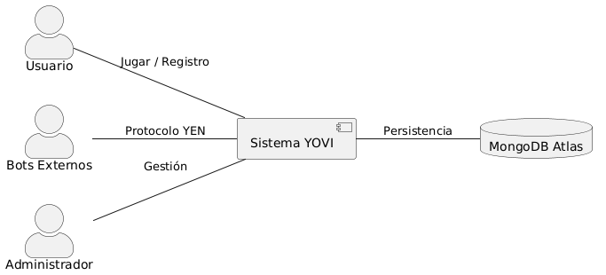
| Socio de comunicación | Entradas | Salidas |
|---|---|---|
Usuario (Jugador) |
Registro de cuenta, selección de niveles de dificultad y ejecución de movimientos en el tablero. |
Visualización del estado del juego, confirmación de registro y feedback de movimientos. |
Bots / Sistemas Externos |
Peticiones HTTP enviando el estado del tablero en notación YEN o YGN. |
Respuesta con el próximo movimiento calculado por el motor de alto rendimiento en Rust. |
MongoDB Atlas |
Consultas de lectura y comandos de escritura (usuarios, partidas, amigos). |
Datos persistidos, histórico de juegos y perfiles actualizados. |
Administrador / Alumno |
Despliegue mediante Docker Compose y ejecución de suites de pruebas ( |
Logs de contenedores, métricas de rendimiento del motor y documentación técnica generada. |
3.2. Contexto Técnico
La arquitectura de YOVI se define por la interoperabilidad de tres componentes principales aislados, comunicados mediante protocolos REST y orquestados por un entorno de contenedores.
@startuml node "Navegador" as browser node "Servidor YOVI (Docker)" as docker node "MongoDB Atlas (Cloud)" as atlas browser -- docker : HTTPS / REST (443) docker -- atlas : TLS / TCP (27017) @enduml
| Interfaz | Canal / Protocolo | Descripción |
|---|---|---|
Webapp (Frontend) |
HTTP / React & Vite (Puerto 80/5173) |
SPA en TypeScript que orquestra la experiencia del usuario y consume las APIs de lógica y usuarios. |
Users Service |
REST / Node.js & Express (Puerto 3000) |
Servicio encargado de la gestión y persistencia de las cuentas de usuario. |
Gamey Engine |
REST / Rust & Cargo (Puerto 4000) |
Servicio de lógica de juego encargado de validar movimientos, estados de victoria y ejecución de bots. |
MongoDB Atlas |
Protocolo MongoDB (TLS) |
Clúster gestionado en la nube que aloja bases de datos independientes para cada servicio. |
Infraestructura |
Docker / Docker Compose |
Red virtual que aísla los servicios y gestiona el ciclo de vida de los contenedores del sistema. |
Mapeo de Entradas/Salidas:
-
Gestión de Usuarios: El flujo de registro y autenticación es responsabilidad exclusiva del servicio Users, que recibe datos de formulario y devuelve confirmaciones de estado.
-
Lógica de Juego: El Webapp delega la inteligencia de tablero, validación de movimientos y cálculo de bots al servicio Gamey.
-
Protocolo de Comunicación: Todos los componentes utilizan JSON para el intercambio de mensajes, empleando las notaciones YEN y YGN para representar el estado del tablero.
-
Orquestación de Red: La comunicación entre servicios se realiza internamente a través de la red de Docker, exponiendo los puertos necesarios para la interacción con el usuario.
4. Estrategia de Solución
El proyecto yovi_es1b se ha resuelto como un sistema distribuido ligero, con separación clara entre la experiencia de usuario, la gestión de cuentas y el motor del juego. La idea principal no era solo "tener una web", sino construir una arquitectura que permitiera evolucionar cada parte por separado, probarla de forma independiente y desplegarla sin arrastrar al resto del sistema.
Esta estrategia se apoya en cuatro principios:
-
Separación de responsabilidades: la
webappse encarga de la interacción con el usuario,userscentraliza identidad, perfil y operaciones de integración, ygameyconcentra la lógica del juego. -
Elección tecnológica por responsabilidad: React/TypeScript para la interfaz, Node.js/TypeScript para la capa de integración y Rust para el motor de juego.
-
Persistencia desacoplada: cada servicio persiste los datos que le corresponden, evitando una base de datos compartida como punto único de acoplamiento.
-
Despliegue reproducible: Docker, Docker Compose, Nginx y certificados locales con
mkcertpermiten levantar el sistema de forma consistente en desarrollo, pruebas y demostración.
| Eje | Decisión | Motivo principal |
|---|---|---|
Descomposición |
|
Separar experiencia de usuario, integración y motor de juego |
Frontend |
React + TypeScript + Vite, organizado por páginas |
Componentes reutilizables, tipado y arranque claro por flujo |
Backend de integración |
Node.js + Express + Mongoose |
APIs REST sencillas, validación y rápida evolución |
Motor de juego |
Rust + Tokio + Axum |
Rendimiento, seguridad de memoria y concurrencia |
Datos |
MongoDB con responsabilidad por servicio |
Esquema flexible y menor acoplamiento entre dominios |
Autenticación |
|
Seguridad base sin sesiones en servidor |
Integraciones |
i18next, OpenAPI/Swagger, PayPal |
Usabilidad, contrato visible y valor añadido |
Despliegue |
Docker Compose + Nginx + |
Reproducibilidad y HTTPS local |
Calidad |
Tests, SonarCloud, Prometheus/Grafana |
Detección temprana de errores y observabilidad |
4.1. Descomposición principal
La aplicación se divide en tres bloques principales:
-
webapp: interfaz pública construida con React y TypeScript. Está organizada como una aplicación multipágina con entradas separadas para inicio, login, registro y juego, lo que hace que cada flujo tenga su propio arranque y su propio contexto visual. -
users: servicio Node.js/Express que actúa como punto de entrada público para autenticación, perfil, relaciones sociales y parte de la integración con el motor de juego. -
gamey: servicio Rust que implementa el motor de juego, los bots y la persistencia del histórico de partidas.
Esta separación se eligió porque los tres bloques tienen ritmos de cambio muy distintos. La interfaz cambia mucho en experiencia de usuario, el servicio de usuarios cambia en reglas de negocio y autenticación, y el motor de juego necesita rendimiento y aislamiento del estado. Mantenerlos juntos habría aumentado el acoplamiento y habría hecho más difícil evolucionarlos.
4.2. Estrategia tecnológica
La elección del stack no fue arbitraria. En el frontend se usa React + TypeScript + Vite porque facilita construir pantallas reutilizables, tipadas y rápidas de desarrollar. Además, el uso de varias entradas HTML hace que cada pantalla arranque de forma independiente, algo que encaja bien con los flujos reales del proyecto: home, login, registro y juego.
En la capa de integración se usa Node.js + Express porque resulta ágil para exponer APIs REST, recibir peticiones JSON, validar datos y coordinar llamadas con otros servicios. Sobre esa base se apoya Mongoose, que aporta una estructura clara al trabajo con MongoDB sin perder la flexibilidad del modelo documental.
El motor de juego está implementado en Rust porque la parte más sensible del sistema es la que calcula el estado de partida, los movimientos y la lógica de bots. Rust aporta rendimiento, seguridad de memoria y una gestión de concurrencia mucho más robusta que otras opciones más dinámicas.
4.3. Estrategia de datos
La persistencia se apoya en MongoDB y sigue una lógica de separación por servicio. users guarda la información de usuarios, perfiles, amigos, solicitudes y credenciales hasheadas. gamey almacena el histórico de partidas y estadísticas de juego. De esta manera se evita el anti-patrón de una base de datos compartida donde todos los servicios escriben y leen indiscriminadamente.
La consecuencia práctica es muy importante:
-
El esquema de usuario puede evolucionar sin afectar al motor de juego.
-
El histórico de partidas puede crecer y optimizarse sin tocar el login.
-
Las relaciones sociales y el perfil público se gestionan en el dominio de usuarios.
-
Las estadísticas y el histórico de partidas pertenecen al dominio de juego.
Además, los datos de la sesión activa se guardan de forma diferente según su naturaleza. El token JWT se conserva en sessionStorage porque debe desaparecer al cerrar el navegador, mientras que preferencias como idioma, avatar o nick se guardan en localStorage porque forman parte de la personalización persistente del usuario.
4.4. Estrategia de comunicación e integración
La comunicación entre servicios se realiza mediante HTTP/JSON. El frontend no llama directamente a todo, sino que trabaja con un punto de entrada público claro. users concentra la mayor parte de las operaciones visibles para el cliente y reenvía al motor de juego aquello que pertenece a gamey.
Esta estrategia simplifica bastante el cliente porque:
-
solo necesita conocer una base URL pública principal;
-
la autenticación se centraliza;
-
la política CORS se controla en un solo sitio;
-
y la integración con
gameyqueda encapsulada detrás del servicio de usuarios.
Además, la aplicación incorpora integración con terceros cuando aporta valor real. El caso más claro es PayPal, usado para la compra de XP, y el soporte multilenguaje con i18next, que permite cambiar la interfaz sin reescribir componentes.
4.5. Estrategia de despliegue
El despliegue está pensado para ser repetible y predecible. Cada componente se empaqueta en su propio contenedor Docker y el conjunto se coordina con Docker Compose. Esto permite levantar la aplicación completa en un entorno homogéneo y reduce el clásico problema de "en mi máquina funciona".
La webapp se construye como una imagen multi-stage y en producción se sirve con Nginx a partir de los distintos entry points HTML de la MPA (index.html, login.html, register.html y game.html), mientras que en desarrollo se ejecuta con Vite. El try_files de Nginx actúa solo como respaldo genérico para rutas no resueltas como archivo estático, no como mecanismo principal de navegación. El servicio users puede arrancar en HTTPS si existen certificados locales, generados con mkcert, lo que nos acerca bastante al comportamiento de un entorno real sin complicar demasiado la puesta en marcha.
La ventaja de esta decisión es que el sistema queda listo tanto para desarrollo local como para despliegues de evaluación o demostración, con las dependencias ya encapsuladas en sus contenedores.
4.6. Estrategia de calidad
La calidad no se ha dejado como una tarea final, sino que forma parte de la estrategia desde el principio. Se usan pruebas automatizadas con Vitest en la parte JavaScript/TypeScript y pruebas en Rust para gamey. Además, el proyecto se analiza con SonarCloud para detectar bugs, vulnerabilidades y deuda técnica.
Como apoyo operativo, el servicio users expone métricas para Prometheus y Grafana, lo que facilita la observabilidad del sistema. Esto es especialmente útil en un proyecto distribuido, donde no basta con que el código compile: también hay que poder diagnosticar qué está pasando en ejecución.
4.7. Estrategia organizativa
La documentación sigue arc42, porque da una estructura común a todo el sistema y facilita que una persona nueva pueda entender la arquitectura sin perderse. El desarrollo se ha hecho de forma incremental y con trabajo repartido por componentes, lo que ha permitido avanzar en paralelo sin mezclar responsabilidades.
En resumen, la estrategia de solución se basa en una combinación de:
-
desacoplamiento entre servicios,
-
elección tecnológica según el problema,
-
persistencia separada,
-
despliegue reproducible,
-
y calidad automatizada desde el inicio.
Esto no elimina la complejidad, pero la reparte mejor y hace que el sistema sea más mantenible, más explicable y más fácil de evolucionar.
5. Vista de Bloques de Construcción
5.1. Caja Blanca del Sistema General
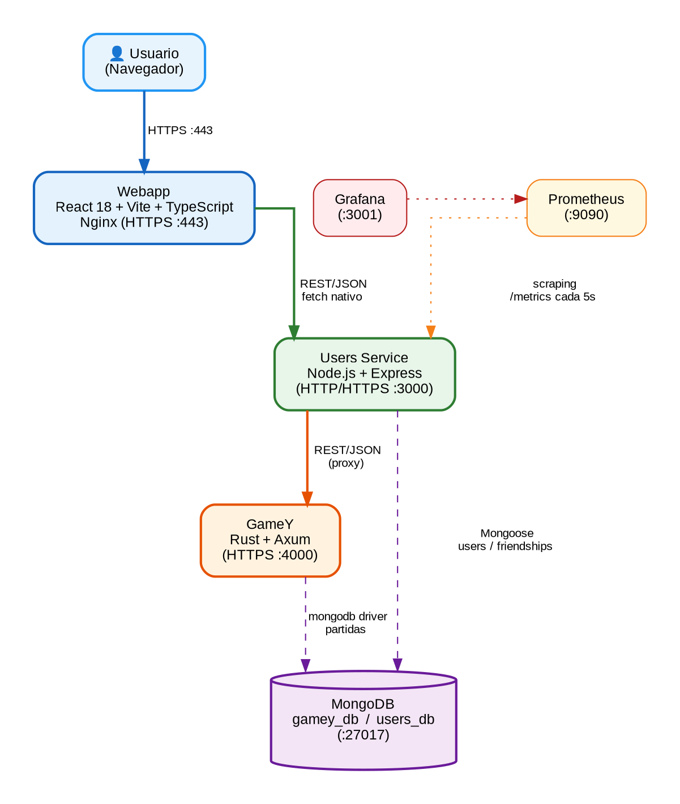
- Motivation
-
La aplicación YoVi permite jugar al juego de conexión Y online contra distintos bots con diferentes niveles de dificultad. Gestiona el registro y autenticación de usuarios, guarda el historial de partidas y ofrece una interfaz web accesible desde el navegador. El sistema se estructura como una arquitectura de microservicios orquestados con Docker Compose, donde cada servicio es propietario de su propia área de datos (patrón Database-per-Service).
- Bloques de Construcción de Contenidos
| Nombre | Descripción | Puerto |
|---|---|---|
Usuario |
Usuario de la aplicación que interactúa con ella a través del navegador web. |
— |
Webapp |
Interfaz gráfica Multi-Page Application (MPA) construida con React 18, Vite 7 y TypeScript. Gestiona 5 paginas independientes (index, login, register, gamemode, game). Renderiza el tablero triangular en SVG con celdas interactivas, controla el temporizador de turno (Easy=60s, Medium=30s, Hard=15s), gestiona el sistema de amigos, el perfil de usuario, la tienda de XP con PayPal y la internacionalización en 4 idiomas (es, en, de, pt). Servida por Nginx con HTTPS. |
443 |
Users |
Servicio backend en Node.js + Express que actúa como BFF (Backend For Frontend) y API Gateway. Centraliza autenticación (JWT 24h + bcryptjs), registro, gestión de perfil, sistema de amigos por FriendCode (generado con nanoid) y tienda de XP. Proxifica todas las llamadas al motor de juego hacia Gamey. Expone métricas Prometheus. |
3000 |
Gamey |
Motor de juego implementado en Rust + Axum. Mantiene el estado de cada partida en
memoria mediante |
4000 |
MongoDB |
Base de datos documental accesible únicamente desde la red interna Docker. El Users
Service gestiona las colecciones |
27017 |
Prometheus |
Recolecta métricas del Users Service cada 5 segundos mediante scraping del endpoint
|
9090 |
Grafana |
Visualiza en dashboards las métricas recopiladas por Prometheus. Provisionado
automáticamente desde ficheros YAML en |
3001 |
- Important Interfaces
| Interfaz | Entre | Descripción |
|---|---|---|
REST |
Webapp → Users |
Inicia o reinicia una partida con el tamaño de tablero y dificultad seleccionados. Devuelve el estado inicial del tablero en formato YEN. |
REST |
Webapp → Users |
Envía el índice de celda elegida por el jugador. El servicio lo reenvía a Gamey, que responde con el nuevo estado YEN tras el movimiento del jugador y la respuesta del bot. Suma XP atómicamente si el ganador es el humano. |
REST |
Webapp → Users |
Registra la rendición del jugador y persiste la derrota en MongoDB vía Gamey. |
REST |
Webapp → Users |
Consulta el historial de partidas paginado con filtros por resultado (Victoria/Derrota). |
REST |
Webapp → Users |
Devuelve la lista de dificultades disponibles (Easy, Medium, Hard). |
REST |
Webapp → Users |
Consulta y actualiza el perfil del usuario: nickname, idioma, avatar e icono. |
REST |
Webapp → Users |
Envía una solicitud de amistad a otro usuario identificado por su FriendCode. |
REST |
Webapp → Users |
Consulta las solicitudes de amistad pendientes recibidas. |
REST |
Webapp → Users |
Acepta o rechaza una solicitud de amistad pendiente. |
REST |
Users → Gamey |
Reenvía el índice de celda al motor Rust, que ejecuta el movimiento del jugador, calcula la respuesta del bot y devuelve el nuevo estado YEN junto con el ganador si lo hay. |
REST |
Users → Gamey |
Crea o reinicia la |
YEN (JSON) |
Users ↔ Gamey |
Formato de intercambio del estado del tablero: |
5.1.1. Webapp
Purpose/Responsibility: Proporcionar la interfaz gráfica del juego al usuario final. Gestiona el flujo completo de la partida: selección de dificultad y tamaño de tablero, renderizado del tablero triangular YEN, temporizador de turno con movimiento automático al agotarse, y visualización del historial de partidas. La Webapp es una MPA de 4 páginas independientes; Nginx sirve cada fichero HTML directamente sin fallback SPA.
Interface(s): Se comunica exclusivamente con el Users Service mediante fetch nativo
(sin librerías HTTP adicionales). No accede directamente a Gamey ni a MongoDB.
El JWT se envía en la cabecera Authorization: Bearer <token>.
Quality/Performance Characteristics: El temporizador de turno opera en cliente con
setInterval de 1 segundo. El cambio de idioma es instantáneo (< 200ms) sin recarga
de página gracias a react-i18next. El modo invitado permite jugar sin registro.
Directory/File Location: webapp/src/
5.1.2. Users
Purpose/Responsibility: Gestionar la autenticación y registro de usuarios, el historial
de partidas, el sistema de amigos y la tienda de XP. Actúa como API Gateway entre la
webapp y el motor de juego Gamey. Al registrarse, cada usuario recibe un FriendCode
único de 6 caracteres (generado con nanoid, alfabeto sin caracteres ambiguos) que
permite identificarle para añadirle como amigo.
Interface(s): Expone una API REST en el puerto 3000. Se conecta a MongoDB mediante Mongoose para persistencia y a Gamey (puerto 4000) para toda la lógica de juego.
Quality/Performance Characteristics: Expone métricas en formato Prometheus mediante
express-prom-bundle (latencia, método HTTP, código de estado). Soporta HTTPS
condicional: si encuentra certificados en /certs/ arranca con HTTPS; si no, con HTTP
(útil para CI sin certificados).
Directory/File Location: users/
5.1.3. Gamey
Purpose/Responsibility: Ejecutar toda la lógica del Juego Y: mantener el estado de
cada partida en memoria, validar movimientos, detectar la condición de victoria
(conexión de los tres lados del triángulo mediante Union-Find), gestionar el estado
del tablero en formato YEN y calcular las respuestas de los bots registrados en el servidor. El codigo contiene varios bots, aunque el arranque HTTP actual registra RandomBot y ProBot.
Persiste el historial de partidas y estadísticas en MongoDB.
Interface(s): Expone una API REST en el puerto 4000 con HTTPS obligatorio (Rustls).
Recibe y devuelve el estado del tablero en formato YEN (JSON). Incluye documentación
OpenAPI generada automáticamente con utoipa, accesible en /swagger-ui.
Quality/Performance Characteristics: Implementado en Rust para máximo rendimiento en el cálculo de los bots Hard (AttackerBot y ProBot), que ejecutan BFS sobre todo el tablero en cada turno. La topología triangular pre-calcula vecinos y regiones en la construcción del tablero, garantizando acceso O(1) durante el juego.
Directory/File Location: gamey/src/
5.2. Nivel 2
5.2.1. White Box Webapp
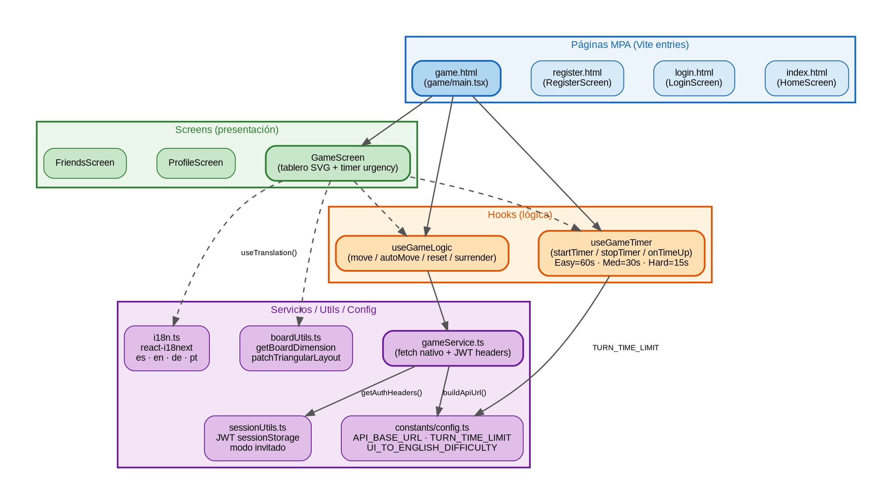
La webapp está organizada en páginas MPA, pantallas de presentación, hooks de lógica y una capa de servicios. Cada página MPA tiene su propio bundle JavaScript compilado por Vite.
| Componente | Descripción |
|---|---|
|
Puntos de entrada para cada pagina MPA (index, login, register, gamemode, game). |
|
Renderiza el tablero triangular YEN con celdas SVG interactivas. Muestra el
temporizador con barra de progreso y aplica la clase |
|
Permite actualizar nickname (máx. 15 chars), idioma, avatar e icono, y cambiar la contraseña. Sincroniza los cambios con el Users Service. |
|
Panel de amigos. Búsqueda por username (regex) o por |
|
Encapsula la lógica de partida: movimiento humano, movimiento automático por tiempo
agotado (usando |
|
Gestiona el temporizador de turno. |
|
Único punto de salida para todas las llamadas HTTP con |
|
Configuración de |
|
|
|
|
|
JWT en |
5.2.2. White Box Gamey
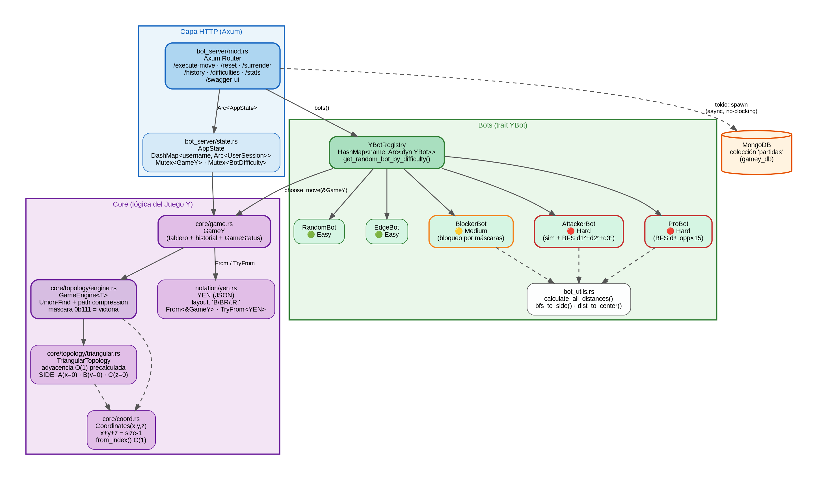
El motor de juego Rust está organizado en los siguientes módulos:
| Módulo | Descripción |
|---|---|
|
Struct |
|
|
|
|
|
|
|
|
|
|
|
|
|
|
|
|
|
|
|
|
|
Router Axum con 8 endpoints. |
|
|
5.2.3. White Box Users
| Módulo | Descripción |
|---|---|
|
Servicio principal Express (774 líneas, 18 endpoints). Define los endpoints REST,
gestiona la conexión a MongoDB, hashea contraseñas con bcryptjs y proxifica las
peticiones de juego a Gamey mediante |
|
Middleware de verificación JWT implementado y disponible. El middleware JWT esta aplicado en la mayoria de rutas sensibles, pero es mejorable (deuda técnica DT-01). |
|
Modelo Mongoose para usuarios: username (único), password (hash bcrypt), friendCode (único, 6 chars, generado con nanoid), birthDate, language, nickname (máx. 15 chars), iconName, totalScore (XP acumulados). |
|
Modelo Mongoose para relaciones de amistad. Campo |
|
|
|
Provisioning automático de datasource (Prometheus) y dashboards de latencia y disponibilidad del Users Service. |
5.3. Nivel 3
5.3.1. White Box ProBot / AttackerBot (bot/)
Los dos bots de dificultad Hard comparten la utilidad bot_utils.rs y siguen el
mismo esquema de evaluación en varias fases:
| Fase | Descripción |
|---|---|
Detección de victoria inmediata (solo AttackerBot) |
Simula cada celda vacía para el jugador propio y para el oponente. Si encuentra un movimiento ganador inmediato lo juega (o lo bloquea). Esta fase no existe en ProBot. |
Cálculo de distancias BFS |
|
Potencial por celda |
AttackerBot: |
Puntuación final (ProBot) |
|
Puntuación final (AttackerBot) |
|
Selección |
Elige la celda vacía con mayor puntuación total. |
5.3.2. White Box Topología Triangular (core/topology/)
| Elemento | Descripción |
|---|---|
|
Pre-calcula en construcción la lista de adyacencia y las regiones (lados A, B, C)
de cada celda para acceso O(1) durante el juego. Total de celdas = |
Coordenadas baricentricas |
Cada celda se identifica por |
|
Motor genérico parametrizado con la topología. Al colocar una ficha: (1) crea un
conjunto con su máscara de región; (2) hace |
5.3.3. White Box Temporizador de turno (useGameTimer)
| Elemento | Descripción |
|---|---|
|
Mapa de traducción de dificultades de UI (Fácil/Medio/Difícil/Easy/Medium/Hard)
a claves internas (Easy/Medium/Hard), definido en |
|
Constante que define el límite en segundos por dificultad: Easy=60s, Medium=30s, Hard=15s. |
|
Cancela el |
|
Detiene el intervalo activo. Se invoca al hacer clic en una celda, al reiniciar partida, al rendirse, al terminar o al salir. |
|
Ref que siempre apunta a la versión más reciente de |
|
Llama a |
5.3.4. White Box Modo multijugador
El modo multijugador actual se apoya en una estrategia separada de la partida contra bot. En la webapp, BotStrategy y MultiplayerStrategy implementan la misma abstraccion GameProvider, de forma que la pantalla de juego puede trabajar con ambos modos sin mezclar toda la logica en el componente visual.
| Pieza | Funcionamiento |
|---|---|
|
Pantalla de seleccion de modo. Se construye como una quinta entrada MPA junto a |
|
Crea un cliente Socket.IO contra |
|
Gestiona desafios, aceptacion de partida, sincronizacion de tablero, movimientos por socket y desconexiones. Tambien consulta el perfil publico del rival para mostrar nickname e icono. |
|
Actua como gateway en tiempo real. Autentica cada socket con JWT, mantiene sockets activos por usuario, crea desafios, salas y partidas, y reenvia los movimientos al motor Rust. |
|
Mantienen partidas PvP en |
Este diseno deja el tiempo real en users, que ya conoce la identidad del usuario, y conserva en gamey la unica responsabilidad de validar el tablero y detectar el ganador. Es una extension natural del modo contra bot, pero con estado de partida indexado por match_id en lugar de por username.
6. Vista de Ejecución
6.1. Escenario 1: Registro de un Nuevo Usuario
Este escenario describe cómo un usuario crea una cuenta. Es un proceso crítico de escritura donde la Webapp captura los datos y el servicio de usuarios asegura la persistencia.
-
Interacción: El usuario utiliza el formulario identificado con selectores únicos (como
login-username) para garantizar la trazabilidad en las pruebas E2E. -
Seguridad: El Users Service cifra la contraseña antes de almacenarla en MongoDB.
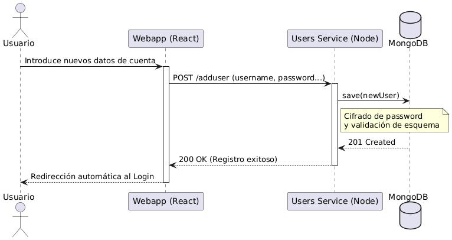
6.2. Escenario 2: Inicio de Sesión (Autenticación)
Describe el acceso de un usuario ya existente. Este flujo es el que se valida principalmente en los tests funcionales de la aplicación.
-
API: El Users Service expone un endpoint REST en el puerto 3000.
-
Resultado: Se genera un token JWT que la Webapp almacenará para futuras peticiones.
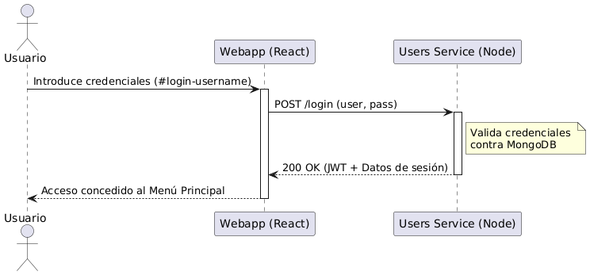
6.3. Escenario 3: Inicialización de Partida y Selección de Bot
El motor de Rust mantiene un estado persistente mediante un AppState que utiliza Arc<Mutex<String>> para gestionar la concurrencia de forma segura.
-
Lógica de Negocio: La dificultad seleccionada filtra la estrategia de la IA (Edge, Attacker, etc.).
-
Persistencia en Memoria: El bot elegido queda fijado en el estado del servidor hasta el fin de la partida.
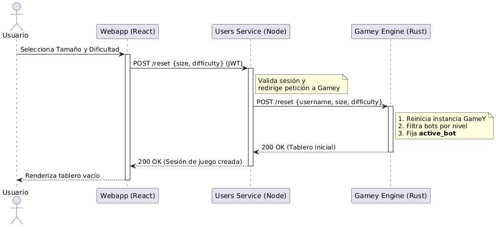
6.4. Escenario 4: Turno de Juego y Persistencia de Resultados
Este escenario ilustra el ciclo de vida de un movimiento. El motor de Rust calcula la respuesta de la IA y, si detecta el fin del juego, persiste el récord.
-
Inteligencia: El motor delega la jugada al
active_botguardado previamente. -
Integración: El servicio de Rust se comunica directamente con MongoDB para guardar el histórico.
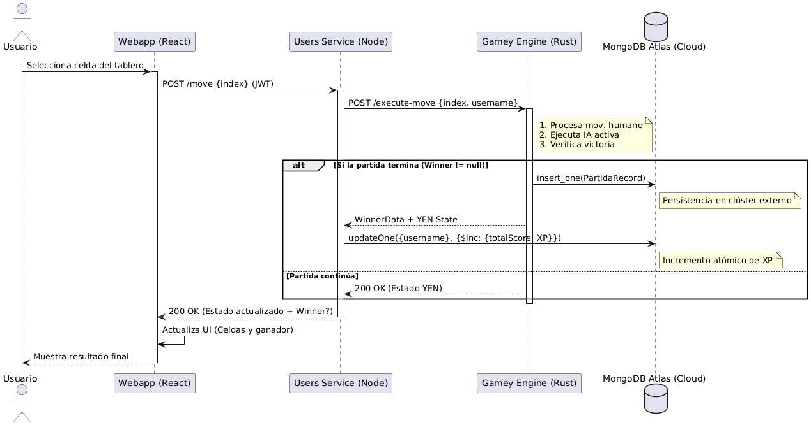
6.5. Escenario 5: Partida multijugador en tiempo real
El modo multijugador usa Socket.IO para la coordinacion en tiempo real y conserva la validacion de reglas en GameY. El navegador no llama directamente a Rust: se conecta al gateway de users, que autentica el socket con JWT y reenvia a GameY solo las operaciones de tablero.
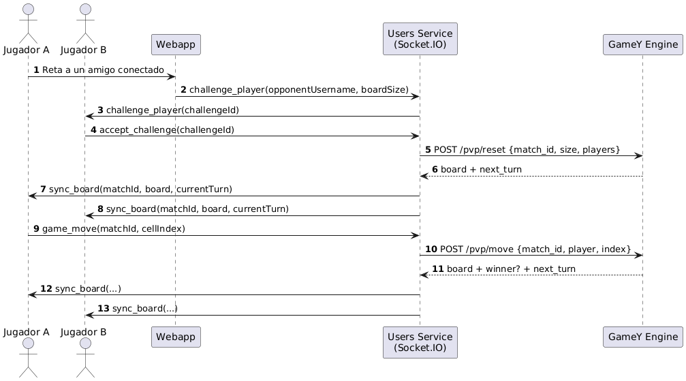
Si un jugador abandona o pierde la conexion, socketHandler marca la partida como abandonada y notifica player_disconnected a la sala. El estado PvP activo vive en memoria tanto en users (salas y turnos visibles) como en gamey (tablero validado), por lo que una caida del proceso obliga a crear una nueva partida.
7. Vista de despliegue
7.1. Infraestructura de Nivel 1
En este apartado se describe la infraestructura global de YOVI, destacando el uso de contenedores para gestionar la heterogeneidad tecnológica del proyecto (Node.js y Rust) y la persistencia de datos.
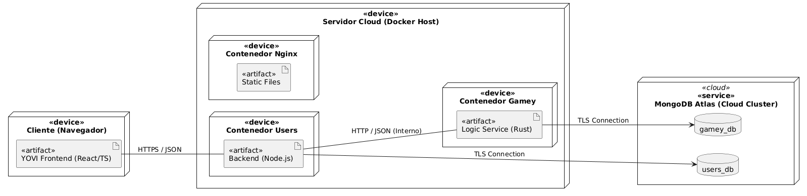
- Motivación
-
La infraestructura se basa en la contenerización con Docker para resolver la necesidad de ejecutar dos entornos distintos (Node.js y Rust). El despliegue en la nube garantiza que la aplicación sea accesible publicamente, cumpliendo con el requisito de disponibilidad para usuarios y bots externos. Así, una parte se encarga de la web y los usuarios (Node.js) y otra exclusivamente de las reglas del juego (Rust).
- Características de Calidad y Rendimiento
-
-
Rapidez: Al tener la lógica del juego en Rust, las jugadas se calculan de manera casi inmediata.
-
Fiabilidad: Como se usan contenedores, el sistema funcionará igual de bien en los ordenadores donde se desarrolla que en los del servidor final.
-
Seguridad: Los datos viajan protegidos por internet para mantener las partidas privadas.
-
- Mapeo de piezas a la infraestructura
| ¿Qué se ha programado? | ¿Dónde se ejecuta? |
|---|---|
La interfaz Web |
En el ordenador o móvil donde la persona juega. |
La API y gestión de usuarios |
En el contenedor principal del servidor. |
Las reglas y estrategias del juego |
En el contenedor principal de Rust. |
El historial de partidas |
En el servidor de base de datos. |
7.2. Infraestructura de Nivel 2
7.2.1. Servidor en la Nube (Docker Host)
Es el servidor principal donde ocurre todo lo relativo al backend.
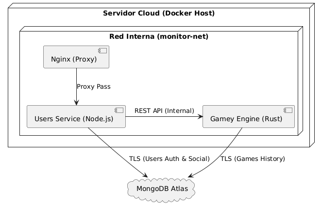
Explicación: En este nivel de detalle se observa que el servidor de Node.js funciona como un punto de control. Cuando el usuario solicita su historial, Node no accede a los datos de las partidas directamente; en su lugar, realiza una petición interna al servicio de Rust. Es Rust quien tiene la responsabilidad única de comunicarse con la colección partidas de MongoDB para registrar o recuperar los resultados de los juegos. Esta separación garantiza que la lógica del juego y la gestión de usuarios no interfieran entre sí.
7.2.2. Cliente
Es el dispositivo (PC o móvil) de la persona que utiliza la aplicación.
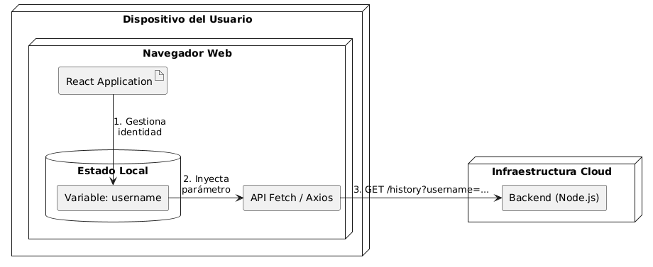
Explicación: Al acceder a la web, el navegador descarga la aplicación de React, que se ejecuta íntegramente en el dispositivo del usuario. El sistema utiliza el Estado Local (memoria RAM) para mantener identificada la sesión. Así, cuando el jugador solicita su historial, el código rescata el nombre guardado y construye una petición dinámica hacia el backend de Node.js. Esto permite que el juego sea fluido y que el servidor reciba siempre el contexto necesario para filtrar los datos de la base de datos correctamente.
7.2.3. Base de Datos (Persistencia)
Es el lugar donde se almacena la información. De esta manera no se perderá la información al reiniciar los contenedores.
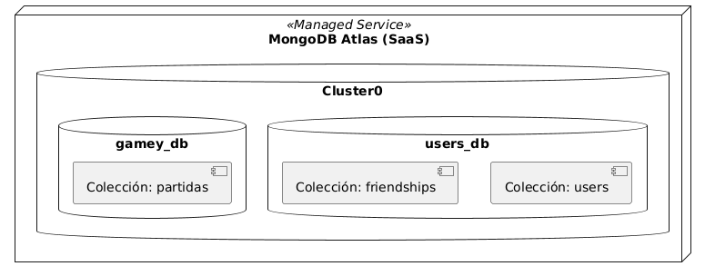
Explicación: Se utiliza el servicio gestionado MongoDB Atlas, organizando la información en dos bases de datos independientes (users_db y gamey_db) para cumplir con el patrón Database-per-Service. Al ser un servicio SaaS (Software as a Service), la persistencia, las copias de seguridad y la seguridad de los datos están delegadas al proveedor cloud, eliminando la dependencia de volúmenes locales en nuestro servidor y garantizando que los datos no se pierdan al reiniciar o eliminar los contenedores de Docker.
7.3. Detalles actuales de despliegue local
El docker-compose.yml actual levanta cinco servicios principales en la red monitor-net: webapp, users, gamey, prometheus y grafana. La base de datos no se crea como contenedor propio en este compose; los servicios reciben sus URI mediante variables de entorno (MONGODB_URI_USERS y MONGODB_URI_GAMEY), lo que permite usar MongoDB externo o Atlas sin cambiar codigo.
| Servicio | Puerto externo | Notas |
|---|---|---|
|
80 y 443 |
Nginx sirve la MPA y proxifica |
|
3000 |
Arranca en HTTPS si encuentra |
|
4000 externo → 3000 interno |
El binario se ejecuta con |
|
9090 |
Lee la configuracion desde |
|
9091 externo → 3000 interno |
Provisiona datasource y dashboards desde |
Los certificados locales se montan desde ./certs tanto en Nginx como en users y gamey. En desarrollo con Vite, webapp/vite.config.ts tambien intenta usar esos certificados si existen.
8. 8. Conceptos transversales
8.1. 8.1. Gestión de Proyecto
8.1.1. Metodología de desarrollo
El proyecto adopta una metodología ágil basada en Scrum. Este enfoque iterativo e incremental permite una adaptación continua a los cambios y una entrega de valor constante. Se realizan reuniones semanales de seguimiento para revisar el progreso, ajustar la planificación y asegurar la alineación del equipo.
8.1.2. Tareas y prioridades
La planificación y el seguimiento de las tareas se centralizan en GitHub Projects. Las prioridades se revisan cada semana, quedando documentadas en actas de reunión para garantizar la transparencia y el compromiso del equipo.
8.2. 8.2. Arquitectura y patrones de diseño
8.2.1. Arquitectura de Microservicios
La solución se ha diseñado siguiendo una arquitectura de microservicios. Este patrón estructura la aplicación como un conjunto de servicios pequeños, autónomos y débilmente acoplados.
Beneficios Clave:
-
Escalabilidad: Permite escalar componentes individuales según la demanda.
-
Mantenibilidad: Facilita la comprensión, el desarrollo y el despliegue independiente de cada servicio.
-
Flexibilidad Tecnológica: Posibilita el uso de diferentes tecnologías o lenguajes para cada servicio si fuera necesario.
8.3. 8.3. Entorno de Desarrollo y Despliegue
8.3.1. Contenerización con Docker
Se utiliza Docker y Docker Compose para estandarizar los entornos de desarrollo, pruebas y producción. Cada microservicio (Webapp, Users, GameY) se empaqueta en su propio contenedor, asegurando que la aplicación se ejecute de manera consistente independientemente de la máquina anfitriona. Esto elimina el problema de "funciona en mi máquina" y simplifica la configuración inicial para nuevos desarrolladores.
8.4. 8.4. Calidad y Automatización
8.4.1. Integración Continua y Calidad de Código (CI/CQ)
El proyecto implementa prácticas de Integración Continua (CI) y Calidad de Código (CQ) para mantener un alto estándar de desarrollo:
-
GitHub Actions: Se utilizan flujos de trabajo automatizados para ejecutar pruebas y verificar la integridad del código en cada push o pull request.
-
SonarQube / SonarCloud: Se integra el análisis estático de código para detectar bugs, vulnerabilidades de seguridad y deuda técnica de manera temprana.
8.4.2. Estrategias de juego en la webapp
La pantalla de juego no distingue los modos mediante condicionales dispersos, sino mediante estrategias. BotStrategy encapsula el flujo clasico contra IA: reset, movimiento, rendicion y temporizador. MultiplayerStrategy encapsula sockets, desafios, salas, turnos y sincronizacion del tablero. Ambas implementan GameProvider, lo que reduce el acoplamiento de GameScreen y facilita extender modos de juego nuevos.
8.4.3. Autenticacion HTTP y tiempo real
La autenticacion combina JWT en sessionStorage y cookie token HTTP-only emitida por users. Las peticiones HTTP usan Authorization: Bearer <token> y credentials: include; los sockets se autentican con el token enviado en handshake.auth o con la cookie. Las rutas sensibles de usuarios, amigos, juego e historial usan authMiddleware; el login, registro y logout quedan como rutas publicas o de gestion de sesion.
9. Decisiones de Arquitectura
Esta sección complementa la estrategia de solución descrita en la sección 4. Aquí no repetimos la arquitectura de alto nivel, sino que dejamos constancia de las decisiones que más condicionan el sistema y de por qué se tomaron.
Usamos un formato ADR ligero, con cinco partes:
-
Contexto
-
Alternativas consideradas
-
Decisión
-
Rationale
-
Consecuencias
Los criterios que han guiado estas decisiones son los que más pesan en un proyecto de este tipo:
-
Separación de responsabilidades
-
Mantenibilidad y facilidad de cambio
-
Rendimiento en la parte interactiva
-
Seguridad de credenciales y sesión
-
Reproducibilidad de despliegue
-
Observabilidad y capacidad de diagnóstico
9.1. Resumen de decisiones
| ID | Decisión | Prioridad | Motivo principal |
|---|---|---|---|
AD-01 |
Descomposición en |
Alta |
Aislar interfaz, identidad y motor de juego |
AD-02 |
Stack poliglota: React/TypeScript, Node.js/TypeScript y Rust |
Alta |
Elegir la tecnología adecuada para cada responsabilidad |
AD-03 |
Frontend multipágina con Vite |
Alta |
Separar flujos de entrada y simplificar el arranque por pantalla |
AD-04 |
|
Alta |
Centralizar autenticación, perfil y parte de la comunicación con |
AD-05 |
MongoDB con ownership por servicio |
Alta |
Evitar una base de datos compartida y permitir evolución independiente |
AD-06 |
Autenticación con |
Alta |
Proteger credenciales sin estado de servidor |
AD-07 |
Gestión social en |
Media |
Friend code, amistad, solicitudes y perfil público |
AD-08 |
Estado vivo de partida en memoria y histórico persistido |
Alta |
Baja latencia en juego y trazabilidad posterior |
AD-09 |
Comunicación HTTP/JSON entre capas |
Alta |
Integración simple y depurable entre frontend, |
AD-10 |
PayPal con SDK oficial |
Media |
Delegar el pago y evitar manejar tarjetas directamente |
AD-11 |
Internacionalización con |
Media |
Interfaz multilingüe mantenible |
AD-12 |
Docker Compose, Nginx y |
Alta |
Despliegue reproducible y entorno local cercano a producción |
AD-13 |
OpenAPI/Swagger |
Media |
Contrato visible para integración y pruebas manuales |
AD-14 |
Observabilidad con Prometheus y Grafana |
Media |
Métricas y diagnóstico operativo |
AD-15 |
Calidad automatizada con tests y SonarCloud |
Media |
Detectar regresiones y deuda técnica |
AD-16 |
CORS permisivo en desarrollo |
Baja |
Reducir fricción durante la integración |
AD-17 |
No incorporar LLMs en la versión actual |
Baja |
Evitar complejidad y dependencias no necesarias |
AD-18 |
Documentación estructurada con arc42 |
Baja |
Mantener una guía técnica homogénea y evaluable |
9.2. AD-01. Descomposición en webapp, users y gamey
9.2.1. Contexto
La solución tiene tres dominios claramente distintos: la interfaz de usuario, la gestión de cuenta/relación social y el motor de juego. Cada uno evoluciona con ritmos diferentes y tiene necesidades técnicas diferentes.
9.2.2. Alternativas consideradas
-
Un monolito clásico con toda la lógica mezclada.
-
Un monolito modular.
-
Microservicios ligeros por responsabilidad.
9.2.3. Decisión
Dividir el sistema en tres bloques: webapp, users y gamey.
9.2.4. Rationale
Separar estos dominios reduce el acoplamiento y permite que cada parte se diseñe con prioridades distintas. La interfaz necesita rapidez de iteración; users necesita reglas de autenticación, perfil y social; gamey necesita rendimiento, concurrencia y estado de partida. Mezclarlos en una única base técnica habría dificultado el mantenimiento y habría hecho más difícil justificar cambios de alcance distinto.
9.2.5. Consecuencias
-
Cada bloque puede evolucionar y desplegarse con menor impacto sobre el resto.
-
Se aclaran mejor las fronteras funcionales.
-
El equipo puede trabajar en paralelo sobre piezas independientes.
-
Aparecen llamadas de red entre servicios.
-
La integración, la observabilidad y las pruebas end-to-end son más exigentes que en un monolito.
9.3. AD-02. Stack poliglota: React/TypeScript, Node.js/TypeScript y Rust
9.3.1. Contexto
No todas las partes del sistema tienen los mismos requisitos. La UI debe ser rápida de construir y mantener; la capa de integración debe ser flexible; el motor de juego necesita rendimiento y seguridad de memoria.
9.3.2. Alternativas consideradas
-
Hacer todo en JavaScript/TypeScript.
-
Hacer todo en Rust.
-
Usar un stack poliglota por dominios.
9.3.3. Decisión
Usar React + TypeScript + Vite en la webapp, Node.js + TypeScript en users y Rust en gamey.
9.3.4. Rationale
Esta combinación permite elegir la herramienta más adecuada para cada responsabilidad. React y TypeScript son muy cómodos para construir interfaces reutilizables y tipadas. Node.js encaja bien para exponer APIs REST y coordinar integración. Rust aporta concurrencia y rendimiento en la parte de juego, donde los ciclos de cálculo y la gestión del estado son más sensibles.
9.3.5. Consecuencias
-
Buen equilibrio entre velocidad de desarrollo y rendimiento.
-
Mayor claridad al asignar responsabilidades técnicas.
-
El motor de juego queda protegido por un lenguaje con fuertes garantías de memoria.
-
Aumenta la complejidad operativa del proyecto.
-
Requiere más atención a build, CI y despliegue por usar más de una tecnología base.
9.4. AD-03. Frontend multipágina con Vite
9.4.1. Contexto
El frontend no es una experiencia continua única, sino varios flujos bien diferenciados: inicio, login, registro y juego. Cada uno tiene contexto visual y funcional propio.
9.4.2. Alternativas consideradas
-
Una SPA única con un router central.
-
Páginas separadas con entradas independientes.
9.4.3. Decisión
Construir la webapp como aplicación multipágina con entradas separadas para index.html, login.html, register.html y game.html.
9.4.4. Rationale
Este enfoque encaja mejor con el recorrido real del usuario y con la organización del código. Cada flujo arranca en su propia página y carga solo lo que necesita. Así se evita un árbol de navegación excesivamente centralizado y se simplifica el razonamiento sobre el estado de cada pantalla. Además, Vite soporta muy bien múltiples puntos de entrada.
9.4.5. Consecuencias
-
Arranque claro por flujo.
-
Menor complejidad de routing.
-
Mejor aislamiento entre pantallas con objetivos distintos.
-
Hay navegación completa entre páginas.
-
El estado compartido entre flujos debe persistirse explícitamente cuando interesa.
9.5. AD-04. users como punto público de integración
9.5.1. Contexto
El frontend no debería conocer toda la topología interna del backend. Necesita una base URL estable para autenticación, perfil, relaciones sociales y acciones auxiliares del juego.
9.5.2. Alternativas consideradas
-
El frontend llamando directamente a todos los servicios.
-
Un API gateway dedicado.
-
userscomo punto público de integración.
9.5.3. Decisión
Hacer que users actúe como capa pública de integración. La webapp se comunica principalmente con users, y este servicio reenvía a gamey aquello que pertenece al motor de juego.
9.5.4. Rationale
Centralizar el acceso simplifica el frontend y reduce duplicación de lógica de autenticación, cabeceras y CORS. Además, el dominio de usuario ya concentra identidad, perfil, amigos y compras de XP, por lo que es natural que sea también el punto de entrada para el resto de operaciones visibles para el cliente.
9.5.5. Consecuencias
-
El frontend solo necesita conocer una URL pública principal.
-
Se unifican autenticación, perfil, relaciones sociales y parte de la integración con juego.
-
La política de acceso y CORS se controla en un único sitio.
-
usersse convierte en un componente crítico. -
Si este servicio cae, gran parte de la experiencia pública se ve afectada.
9.6. AD-05. MongoDB con ownership por servicio
9.6.1. Contexto
Los datos de usuarios, amigos, credenciales, perfil, historial y resultados de juego tienen ciclos de vida distintos. No todos deben compartir el mismo esquema ni la misma cadencia de cambio.
9.6.2. Alternativas consideradas
-
Una base de datos compartida para todo el sistema.
-
Una base de datos relacional única.
-
Bases de datos y responsabilidades separadas por servicio.
9.6.3. Decisión
Usar MongoDB con responsabilidad separada por servicio. users y gamey gestionan sus propios datos y sus propias colecciones, cada uno con su URI de conexión.
9.6.4. Rationale
Este modelo evita el anti-patrón de base compartida, que suele introducir acoplamiento fuerte entre equipos y servicios. MongoDB, además, encaja bien con el tipo de documentos manejados en la aplicación: perfiles, amistades, partidas y estadísticas.
9.6.5. Consecuencias
-
Evolución independiente del esquema.
-
Menor dependencia entre dominios.
-
Integración cómoda con el stack Node.js y con el motor de juego.
-
Menor facilidad para consultas relacionales complejas.
-
Hay que vigilar índices, validación y consistencia por servicio.
9.7. AD-06. Autenticación con bcryptjs + JWT
9.7.1. Contexto
Las credenciales no pueden almacenarse en claro y el sistema debe autenticar peticiones sin depender de una sesión de servidor tradicional.
9.7.2. Alternativas consideradas
-
Credenciales en texto plano.
-
Sesiones servidor-side.
-
Hash de contraseña + JWT.
9.7.3. Decisión
Hashear contraseñas con bcryptjs, emitir JWT al iniciar sesión y enviarlo en la cabecera Authorization: Bearer …. En la webapp, el token se guarda en sessionStorage.
9.7.4. Rationale
JWT permite una autenticación sin estado en servidor, lo que simplifica escalado y reduce dependencia de una sesión central. bcryptjs protege la contraseña en reposo y el uso de sessionStorage hace que el token desaparezca al cerrar el navegador, algo coherente con el nivel de persistencia que se quería para la sesión activa.
9.7.5. Consecuencias
-
Las contraseñas no se almacenan en claro.
-
La autenticación es simple de transportar entre peticiones.
-
El frontend controla de forma clara la sesión activa.
-
Hay que aplicar middleware de autorización de forma consistente.
-
La pérdida del token al cerrar el navegador es intencionada, pero obliga a reautenticarse.
9.8. AD-07. Gestión social en users
9.8.1. Contexto
La parte social del proyecto no se limita a una lista de nombres. Se necesitan códigos de amigo, solicitudes pendientes, aceptación/rechazo y perfil público con relación entre usuarios.
9.8.2. Alternativas consideradas
-
Relación social basada solo en username.
-
Integrar la lógica social en el motor de juego.
-
Gestionar relaciones en el servicio de usuarios.
9.8.3. Decisión
Gestionar amigos, friend code, solicitudes y perfil público dentro de users, usando el modelo Friendship y el friendCode como mecanismo de descubrimiento.
9.8.4. Rationale
Esta decisión mantiene el dominio social donde realmente pertenece: junto a identidad, perfil y credenciales. El friend code permite compartir identidad sin exponer directamente el username, y el flujo de solicitudes se adapta bien a una persistencia documental simple.
9.8.5. Consecuencias
-
Descubrimiento de usuarios mediante código fácil de comunicar.
-
Flujo natural de solicitud, aceptación, rechazo y cancelación.
-
El perfil público puede mostrar relación social y estadísticas sin mezclar dominios.
-
El modelo social requiere consultas adicionales.
-
Hay que coordinar bien la información entre amistad y perfil público.
9.9. AD-08. Estado vivo en memoria y histórico persistido
9.9.1. Contexto
La partida necesita baja latencia mientras el usuario juega, pero también hace falta conservar resultados para perfil, historial y métricas.
9.9.2. Alternativas consideradas
-
Guardar todo en base de datos en tiempo real.
-
Mantener todo solo en memoria.
-
Usar memoria para la sesión activa y persistir solo lo terminado.
9.9.3. Decisión
Mantener el estado activo del juego en memoria dentro de gamey y persistir las partidas finalizadas en MongoDB.
9.9.4. Rationale
El estado vivo debe ser inmediato para responder a cada movimiento, mientras que el histórico puede almacenarse de forma asíncrona o al cierre de la partida. Esta separación permite optimizar el bucle de juego sin renunciar al análisis posterior. En la práctica, el histórico se guarda con los datos necesarios para consultas de perfil y paginación de partidas.
9.9.5. Consecuencias
-
Mejor latencia en la interacción de juego.
-
Persistencia útil para historial, estadísticas y futuras extensiones.
-
El backend de juego conserva una sesión clara por usuario.
-
El estado vivo es volátil si el servicio se reinicia.
-
Hay que aceptar un cierto grado de eventualidad entre la partida jugada y su persistencia.
9.10. AD-09. Comunicación HTTP/JSON entre capas
9.10.1. Contexto
Los servicios están escritos en tecnologías distintas, pero deben intercambiar datos de forma simple y legible. El frontend, además, necesita una API fácil de depurar.
9.10.2. Alternativas consideradas
-
gRPC u otro protocolo binario.
-
Mensajería asíncrona como cola principal.
-
HTTP/JSON como capa común.
9.10.3. Decisión
Usar HTTP/JSON como protocolo principal de comunicación entre webapp, users y gamey.
9.10.4. Rationale
HTTP/JSON encaja con el ecosistema del proyecto, es fácil de observar con herramientas de desarrollo y hace más sencilla la integración entre frontend y backend. El código de la webapp usa fetch, y los servicios internos traducen y reenvían peticiones según corresponda.
9.10.5. Consecuencias
-
Integración sencilla y comprensible.
-
Depuración más rápida.
-
Menor coste cognitivo para el equipo.
-
Más dependencia de la red que en una integración en proceso.
-
Requiere cuidar contratos y validación de payloads.
9.11. AD-10. Integración con PayPal mediante el SDK oficial
9.11.1. Contexto
La tienda de XP necesitaba una integración de pago sin asumir la responsabilidad de tratar con tarjetas o datos bancarios.
9.11.2. Alternativas consideradas
-
Implementar un pago propio.
-
No incorporar tienda.
-
Usar el SDK oficial de PayPal.
9.11.3. Decisión
Integrar PayPal con @paypal/react-paypal-js, usando PayPalScriptProvider, PayPalButtons, creación de orden y captura del pago.
9.11.4. Rationale
La lógica de pago se delega a un proveedor especializado, lo que simplifica el proyecto y reduce el riesgo de seguridad. En la webapp, la tienda se presenta como modal independiente y, tras la captura de la orden, se acreditan los XP mediante el backend.
9.11.5. Consecuencias
-
No se gestionan datos bancarios directamente.
-
La experiencia de pago se apoya en un estándar conocido.
-
La lógica de tienda queda desacoplada del tablero.
-
Dependencia de un proveedor externo y de su SDK.
-
En un entorno productivo, la acreditación de XP debería verificarse de forma más robusta en servidor antes de considerarse definitiva.
9.12. AD-11. Internacionalización con i18next
9.12.1. Contexto
La interfaz no debe quedar ligada a un único idioma. Además, parte de la información del usuario también condiciona la experiencia lingüística.
9.12.2. Alternativas consideradas
-
Textos fijos en componentes.
-
Internacionalización centralizada.
9.12.3. Decisión
Usar i18next y react-i18next para gestionar la interfaz multilingüe, persistiendo el idioma en las preferencias del usuario.
9.12.4. Rationale
Centralizar las traducciones simplifica mantenimiento y reduce el coste de introducir o corregir textos. El idioma puede cambiarse dinámicamente desde la interfaz, y la preferencia se guarda tanto en perfil como en almacenamiento local para mantener coherencia entre sesiones.
9.12.5. Consecuencias
-
Interfaz preparada para varios idiomas.
-
Mantenimiento más limpio de textos.
-
Mejor accesibilidad y localización.
-
Hay que mantener sincronizadas las claves de traducción.
-
Aumenta el trabajo de revisión de textos al crecer la aplicación.
9.13. AD-12. Docker Compose, Nginx y mkcert
9.13.1. Contexto
La solución debe poder arrancar igual en varios entornos y reducir al mínimo el típico problema de diferencias entre máquinas.
9.13.2. Alternativas consideradas
-
Ejecución nativa sin contenedores.
-
Contenerización completa con Docker.
-
Contenerización con orquestación simple mediante Docker Compose.
9.13.3. Decisión
Usar Docker y Docker Compose para levantar users, webapp, gamey y los servicios de observabilidad. La webapp se construye en multi-stage y se sirve con Nginx, mientras que los certificados locales se generan con mkcert cuando se necesita HTTPS en entorno de desarrollo.
9.13.4. Rationale
Docker hace el despliegue reproducible y reduce la variabilidad entre entornos. Nginx es una forma simple y robusta de servir la MPA a partir de sus distintos entry points HTML; el try_files que aparece en la configuración actúa solo como respaldo genérico para rutas no resueltas como archivo estático, no como un fallback SPA. mkcert permite probar un entorno seguro sin depender de certificados públicos.
9.13.5. Consecuencias
-
Portabilidad y arranque homogéneo.
-
Menor fricción en el onboarding.
-
Entorno de pruebas más realista.
-
Más configuración inicial.
-
Mayor consumo de recursos que una ejecución nativa aislada.
9.14. AD-13. OpenAPI y Swagger
9.14.1. Contexto
El equipo necesita conocer con claridad los contratos HTTP, tanto para integrar frontend y backend como para revisar manualmente endpoints.
9.14.2. Alternativas consideradas
-
Documentación manual únicamente en texto.
-
Contrato explícito en OpenAPI/Swagger.
9.14.3. Decisión
Publicar documentación de APIs con OpenAPI/Swagger en los servicios que exponen endpoints HTTP.
9.14.4. Rationale
La documentación navegable reduce ambigüedad y facilita comprobar qué parámetros espera cada ruta y qué devuelve. También ayuda a que nuevas personas entiendan el sistema sin tener que inspeccionar todo el código.
9.14.5. Consecuencias
-
Contrato visible y consultable.
-
Mejor soporte para pruebas manuales e integración.
-
Hay que mantener la documentación sincronizada con el código.
9.15. AD-14. Observabilidad con Prometheus y Grafana
9.15.1. Contexto
Un sistema distribuido necesita algo más que logs: conviene saber qué pasa con latencia, disponibilidad y comportamiento de los servicios.
9.15.2. Alternativas consideradas
-
Depender solo de logs.
-
Añadir métricas y dashboards.
9.15.3. Decisión
Instrumentar observabilidad con Prometheus y Grafana, junto con métricas expuestas por users.
9.15.4. Rationale
Las métricas permiten detectar cuellos de botella y tener una lectura más objetiva de la salud del sistema. En un proyecto con más de un servicio, esto aporta mucho valor por un coste razonable.
9.15.5. Consecuencias
-
Diagnóstico más rápido.
-
Posibilidad de crear paneles e indicadores.
-
Infraestructura adicional que desplegar y mantener.
9.16. AD-15. Calidad automatizada con tests y SonarCloud
9.16.1. Contexto
La solución tiene bastante lógica repartida entre frontend, backend y motor de juego. Eso hace necesario detectar regresiones de forma temprana.
9.16.2. Alternativas consideradas
-
Revisar cambios solo de forma manual.
-
Automatizar tests y análisis estático.
9.16.3. Decisión
Usar tests automatizados en las distintas partes del sistema y análisis de calidad con SonarCloud.
9.16.4. Rationale
Los tests protegen las rutas críticas y la lógica de negocio, y el análisis estático ayuda a vigilar deuda técnica, cobertura y posibles vulnerabilidades. En una arquitectura distribuida, esta capa de calidad es especialmente importante.
9.16.5. Consecuencias
-
Menos regresiones.
-
Mayor confianza al cambiar código.
-
Mejor base para evolución futura.
-
Requiere mantenimiento continuo de suites y reglas.
-
Aumenta el tiempo de validación en integración continua.
9.17. AD-16. Política CORS permisiva en desarrollo
9.17.1. Contexto
Durante el desarrollo, frontend y backend no se sirven necesariamente desde el mismo origen.
9.17.2. Alternativas consideradas
-
CORS restrictivo desde el principio.
-
CORS amplio en entorno de desarrollo.
9.17.3. Decisión
Permitir CORS amplio en users durante desarrollo, incluyendo Authorization y los métodos necesarios para las operaciones del proyecto.
9.17.4. Rationale
La prioridad en esta fase es integrar con rapidez y evitar bloqueos innecesarios mientras se iteran pantallas y servicios.
9.17.5. Consecuencias
-
Menos fricción en pruebas locales.
-
Integración más rápida entre frontend y backend.
-
No es una política adecuada para producción y debe endurecerse si el despliegue cambia de contexto.
9.18. AD-17. No incorporar LLMs en la versión actual
9.18.1. Contexto
Se valoró la IA generativa como posible ampliación, pero no forma parte del alcance actual ni resuelve ningún requisito obligatorio del sistema.
9.18.2. Alternativas consideradas
-
Integrar LLMs para bots o asistencia.
-
Mantener el comportamiento actual, más simple y controlado.
9.18.3. Decisión
No incorporar LLMs en esta versión.
9.18.4. Rationale
Se evita añadir complejidad operativa, coste y dependencias externas cuando el sistema ya cubre sus objetivos funcionales con una lógica más predecible.
9.18.5. Consecuencias
-
Arquitectura más simple.
-
Menor riesgo operativo.
-
Menos dependencia de servicios externos.
-
Menor sofisticación potencial en comportamientos asistidos por IA.
9.19. AD-18. Documentación estructurada con arc42
9.19.1. Contexto
La documentación debe ser útil tanto para el equipo como para una evaluación externa. Para ello conviene una estructura homogénea.
9.19.2. Alternativas consideradas
-
Documentación dispersa en archivos sin patrón común.
-
Plantilla estructurada común.
9.19.3. Decisión
Usar arc42 como estructura principal de documentación del proyecto.
9.19.4. Rationale
arc42 facilita entender la solución de forma progresiva: contexto, alcance, decisiones, runtime, despliegue y calidad. Eso hace la documentación más mantenible y más fácil de presentar.
9.19.5. Consecuencias
-
Orden y trazabilidad.
-
Mejor legibilidad para terceros.
-
Exige disciplina para mantener la documentación actualizada.
10. Requisitos de Calidad
10.1. Árbol de calidad
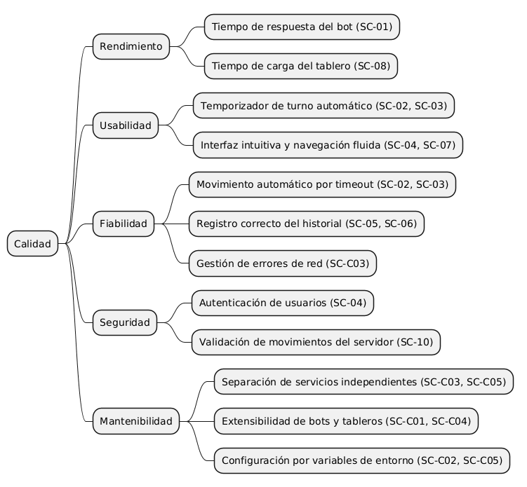
Los atributos de calidad de YoVi se priorizan según su impacto directo en los stakeholders del proyecto.
| Atributo | Sub-atributos relevantes | Prioridad |
|---|---|---|
Desplegabilidad |
Reproducibilidad en cualquier entorno, portabilidad, tiempo de puesta en marcha, despliegue automatizado en CI/CD |
Alta |
Fiabilidad |
Consistencia del estado de partida, comportamiento correcto del temporizador y detección de victoria, gestión de rendiciones |
Alta |
Usabilidad |
Internacionalización en 4 idiomas, claridad de la interfaz, modo invitado sin registro, tutorial interactivo integrado |
Alta |
Seguridad |
Hash de contraseñas (bcrypt), autenticación JWT, validación de entradas contra inyección, uso de |
Media-Alta |
Mantenibilidad |
Cobertura de tests automatizados, análisis estático con SonarCloud, separación clara de responsabilidades entre capas |
Media |
Rendimiento |
Tiempo de respuesta del motor Rust, fluidez del temporizador de turno, latencia del proxy Node→Rust |
Media |
Interoperabilidad |
Protocolo YEN entre Node y Rust, API REST documentada (OpenAPI/Swagger), compatibilidad de contenedores |
Media |
10.2. Escenarios de calidad
10.2.1. Escenarios de uso
| ID | Escenario | Estímulo | Respuesta esperada del sistema |
|---|---|---|---|
SC-01 |
Respuesta del bot en dificultad difícil |
El jugador realiza un movimiento en un tablero de tamaño 12×12×12 con el ProBot o AttackerBot activo. |
El motor Gamey calcula y devuelve el movimiento del bot (BFS de distancias + potencial exponencial) en menos de 2 segundos, actualizándose el tablero en la webapp sin demora visible. |
SC-02 |
Timeout de turno en dificultad Hard |
El jugador no realiza ningún movimiento durante 15 segundos en dificultad Hard. |
El sistema selecciona automáticamente una celda vacía usando |
SC-03 |
Aviso visual de tiempo agotándose |
Quedan 5 segundos o menos en el temporizador de turno del jugador. |
La barra de progreso aplica la clase |
SC-04 |
Registro de nuevo usuario |
Un usuario rellena el formulario de registro con nombre, nickname, contraseña, idioma y fecha de nacimiento válidos. |
El Users Service crea el usuario en MongoDB con contraseña hasheada (bcrypt, saltRounds=10) y asigna un FriendCode único de 6 caracteres (nanoid). La webapp redirige a la pantalla de juego en menos de 1 segundo. |
SC-05 |
Consulta del historial de partidas |
El jugador pulsa el botón "Historial" durante una partida. |
La webapp solicita al backend el historial paginado y muestra una tabla con fecha, rival, tamaño de tablero, dificultad y resultado de cada partida previa en menos de 2 segundos. |
SC-06 |
Rendición del jugador |
El jugador pulsa el botón "Rendirse" durante una partida en curso. |
El sistema detiene el temporizador, el Users Service proxifica a |
SC-07 |
Cambio de dificultad durante la partida |
El jugador cambia la dificultad desde el menú desplegable. |
|
SC-08 |
Cambio de tamaño de tablero |
El jugador selecciona un tablero de 12×12×12 desde el tamaño por defecto (6×6×6). |
La webapp solicita un nuevo tablero al backend, lo renderiza correctamente con 78 celdas y reinicia el temporizador sin perder la dificultad seleccionada. |
SC-09 |
Acceso concurrente de múltiples usuarios |
Diez usuarios distintos inician sesión y juegan simultáneamente. |
|
SC-10 |
Condición de victoria |
Un jugador conecta los tres lados del tablero triangular con sus fichas. |
El motor Gamey detecta la victoria mediante Union-Find (máscara de región = 0b111),
devuelve |
SC-11 |
Solicitud y aceptación de amistad |
El jugador busca a otro usuario por su FriendCode en el panel de amigos y envía solicitud. |
El sistema crea una relación |
SC-12 |
Actualización de perfil |
El jugador cambia su avatar e idioma desde la pantalla de perfil. |
El Users Service actualiza los campos en MongoDB. |
SC-13 |
Cambio de idioma durante la partida |
El usuario selecciona un idioma distinto desde el selector de idioma mientras hay una partida en curso. |
|
SC-14 |
Acceso como invitado |
Un usuario no registrado accede a la página de juego como invitado. |
Puede jugar partidas completas. Al intentar acceder a historial, amigos o perfil
se muestra |
SC-15 |
Compra de XP con PayPal |
El jugador pulsa "Comprar 1000 XP" en la tienda y completa el pago con una cuenta sandbox. |
PayPal confirma la operación, |
10.2.2. Escenarios de cambio
| ID | Escenario | Cambio | Respuesta esperada del sistema |
|---|---|---|---|
SC-C01 |
Añadir un nuevo nivel de dificultad |
Se implementa un nuevo bot en el módulo |
El nuevo bot se registra en |
SC-C02 |
Cambio en el tiempo límite por dificultad |
Se decide modificar el tiempo límite de alguna dificultad. |
Solo es necesario modificar la constante |
SC-C03 |
Caída del servicio Gamey |
El contenedor Gamey deja de responder durante una partida en curso. |
El Users Service recibe un error de red al intentar contactar con Gamey. La webapp muestra el error de conexión. El historial de partidas ya guardadas en MongoDB permanece intacto. El usuario puede reiniciar la partida cuando el servicio se recupere. |
SC-C04 |
Escalado del tamaño de tablero |
Se añade soporte para un nuevo tamaño de tablero. |
Basta con añadir la opción en |
SC-C05 |
Migración de base de datos |
Se decide cambiar de MongoDB local a MongoDB Atlas en producción. |
Solo es necesario actualizar la variable de entorno |
SC-C06 |
Adición de un nuevo idioma |
Se quiere añadir soporte para un quinto idioma. |
Se crea el archivo |
11. Riesgos y Deudas Técnicas
11.1. Riesgos identificados
| ID | Riesgo | Descripción | Mitigación actual | Prioridad |
|---|---|---|---|---|
R-01 |
Pérdida de estado de partidas activas al reiniciar GameY |
Las sesiones de juego ( |
Docker Compose con política de reinicio |
Alta |
R-02 |
Autorizacion fina incompleta |
|
JWT activo en rutas de usuarios, amigos, juego e historial; queda pendiente aplicar proteccion a compra de XP y validar propietario del recurso en rutas sensibles. |
Alta |
R-03 |
Incompatibilidad de |
Los desarrolladores en Windows generan |
Resuelto mediante regeneración del lock en Linux y |
Media (resuelta) |
R-04 |
Curva de aprendizaje en Rust |
El equipo tiene experiencia limitada en Rust, en particular en programación asíncrona con Tokio, manejo del ownership en estructuras compartidas ( |
Code review cruzado obligatorio para código Rust. Uso de |
Media |
R-05 |
Sesión de invitado sin aislamiento de estado en GameY |
Los usuarios invitados juegan con el username vacío o genérico. Si múltiples invitados coinciden en el mismo username interno, podrían compartir estado de partida en el |
El modo invitado no llama a endpoints que requieran username en GameY (solo |
Media |
R-06 |
Disponibilidad del entorno cloud único |
El despliegue de producción depende de un único servidor sin redundancia. Una caída del servidor implica indisponibilidad total del sistema para todos los usuarios. |
Health checks configurados en Docker Compose. Alertas en Grafana para métricas críticas. Procedimiento de recuperación documentado en el README. |
Media |
R-07 |
Cobertura de tests insuficiente en flujos E2E |
Los tests unitarios y de integración cubren componentes aislados, pero los flujos completos (login → juego → victoria → historial) no están cubiertos por tests automáticos de extremo a extremo. Los archivos de Cucumber/Playwright están configurados pero la suite E2E no tiene cobertura completa. |
Cucumber + Playwright instalados y configurados en |
Media |
R-08 |
|
El archivo |
GameY sí tiene documentación OpenAPI generada automáticamente con |
Baja |
11.2. Deudas Técnicas
| ID | Deuda | Descripción | Impacto si no se resuelve | Prioridad |
|---|---|---|---|---|
DT-01 |
Autorizacion por propietario pendiente |
El middleware JWT esta aplicado en la mayoria de rutas sensibles, pero conviene usar |
Riesgo de operaciones sobre otra cuenta o acreditacion de XP sin una verificacion suficientemente fuerte. |
Alta |
DT-02 |
Estado de partida activa no persistido |
GameY mantiene el tablero en memoria ( |
Mala experiencia de usuario ante reinicios del contenedor. Imposibilita funcionalidades futuras como "reanudar partida" o "partidas en pausa". Requiere añadir persistencia del estado del tablero en MongoDB. |
Alta |
DT-03 |
Tests E2E con cobertura incompleta |
La infraestructura de tests E2E con Cucumber y Playwright está instalada y configurada, pero los escenarios implementados no cubren los flujos críticos: partida completa contra bot, expiración del temporizador, cambio de idioma durante partida, flujo de amigos completo. |
Regresiones en flujos de usuario pueden no detectarse hasta producción. Aumenta el riesgo de introducir bugs en integraciones al añadir nuevas funcionalidades. |
Alta |
DT-04 |
CORS abierto ( |
El Users Service permite peticiones desde cualquier origen. En producción esto expone la API a llamadas cross-origin no autorizadas desde dominios externos. |
Riesgo de abuso de la API pública. Debe restringirse al dominio de producción y al localhost para desarrollo. Cambio de bajo impacto técnico pero necesario antes de un despliegue en producción pública. |
Media |
DT-05 |
|
Solo documenta 2 de los 18 endpoints reales, con nombres incorrectos. El endpoint documentado como |
Dificulta la incorporación de nuevos desarrolladores y la comunicación con stakeholders. GameY tiene Swagger automático con |
Media |
DT-06 |
Glosario de la documentación arc42 sin completar (sección 12) |
Los términos específicos del dominio del Juego Y (YEN, YGN, baricéntricas, lados del triángulo, Union-Find, FriendCode, XP…) no están definidos en la documentación. Dificulta la comprensión del proyecto por parte de evaluadores externos o nuevos colaboradores. |
Barrera de entrada para nuevos contribuidores. Riesgo en la evaluación académica si los evaluadores no conocen la terminología del juego. |
Media |
DT-07 |
Prometheus y Grafana no desplegados en el entorno cloud de producción |
El stack de observabilidad está configurado correctamente en Docker Compose local pero no se despliega junto al resto de servicios en producción. No hay alertas activas sobre el sistema en producción. |
Sin visibilidad de errores, latencias ni carga del sistema en producción. Los escenarios de calidad de rendimiento (R-01, R-03) no tienen evidencia empírica. |
Media |
DT-08 |
Cálculo de puntuación duplicado entre Node y Rust |
|
Inconsistencia potencial en los XP otorgados si se actualizan las reglas de puntuación solo en uno de los dos lugares. Requiere unificar el cálculo en un solo servicio (preferiblemente GameY, que tiene el contexto de la partida). |
Baja |
11.3. Plan de acción
| Horizonte | Elementos a abordar | Criterio de hecho |
|---|---|---|
Sprint inmediato |
DT-01 (cerrar autorizacion por propietario y proteger compra de XP), DT-03 (implementar tests E2E para flujo login y partida completa) |
Todas las rutas de escritura usan JWT y validan propietario; al menos 3 escenarios E2E en verde en CI |
Próximos sprints |
DT-02 (persistencia de estado activo en MongoDB), DT-04 (restringir CORS al dominio de producción), DT-07 (desplegar Prometheus/Grafana en producción) |
El reinicio de GameY no pierde partidas en curso; CORS configurado por entorno; dashboards activos en producción |
Backlog |
DT-05 (actualizar |
Documentación completa y revisada; un único punto de verdad para el cálculo de XP |
11.4. Actualizacion de riesgos segun el codigo actual
La documentacion anterior conserva algunas deudas historicas que ya han cambiado en el codigo. En el estado actual, authMiddleware si se aplica en la mayoria de rutas sensibles (/users/, /friends, /move, /reset, /surrender, /history, /difficulties). Por tanto, DT-01 deja de ser una deuda abierta en esos endpoints. Quedan como puntos a revisar:
-
/users/purchase-xpsigue sinauthMiddleware; conviene protegerlo y validar la compra en servidor antes de acreditar XP. -
El middleware comprueba que el JWT sea valido, pero algunas rutas siguen confiando en
usernamerecibido en body/query. Como mejora, deberian compararreq.user.usernamecon el usuario objetivo para evitar operaciones en nombre de otra cuenta. -
El modo PvP mantiene estado activo en memoria en
usersygamey. Si cualquiera de los dos procesos se reinicia, la partida en curso se pierde aunque el historial de partidas terminadas permanezca. -
En
gamey,create_default_registry()registra todos los bots, perorun_bot_server()construye actualmente el registro solo conRandomBotyProBot. Si se quiere que Easy/Medium/Hard ofrezcan todos los bots descritos, conviene usar el registro por defecto en el arranque del servidor.
Con esto, el riesgo principal ya no es "rutas sin JWT" de forma general, sino la autorizacion fina por propietario del recurso y la proteccion completa de operaciones economicas o de XP.
12. Informe de Pruebas
12.1. 12.1. Tests Unitarios
Los tests unitarios verifican el comportamiento correcto de cada componente de forma aislada, proporcionando seguridad, fiabilidad y consistencia al proyecto.
12.1.1. Webapp (Vitest + React Testing Library)
La webapp cuenta con 163 casos de test distribuidos en 22 archivos, cubriendo los componentes, hooks y servicios más críticos del sistema:
| Archivo de test | Qué verifica | Tests |
|---|---|---|
|
Cuenta atrás por dificultad, |
12 |
|
Movimiento humano, movimiento automático por tiempo agotado (via |
15 |
|
Renderizado del tablero triangular YEN, interacción con celdas, estados de victoria y derrota. |
18 |
|
Llamadas HTTP al backend: login, registro, reset, move, surrender, historial. Mockea |
20 |
|
Conversión de tamaño de tablero, parcheado visual del layout triangular, coordenadas de celdas. |
14 |
|
Carga de traducciones en los 4 idiomas (es, en, de, pt), interpolación de parámetros, fallback a español. |
8 |
Resto de archivos |
Componentes de pantalla, modales, perfil, amigos, historial y sesión de invitado. |
76 |
El setup global mockea lottie-react y fija el idioma a es para garantizar tests deterministas independientes del entorno.
12.1.2. Users Service (Vitest + Supertest)
El backend Node.js cuenta con 39 casos de test en 6 archivos, probando todos los endpoints REST mediante Supertest sin levantar un puerto de red real:
| Archivo de test | Qué verifica | Tests |
|---|---|---|
|
Registro con campos obligatorios, nickname largo, username duplicado, fecha inválida, error de DB. |
7 |
|
Login correcto, contraseña incorrecta, trim de espacios en username. |
3 |
|
Búsqueda por username y por FriendCode, follow, duplicado, friends, requests, respond (accept/reject). |
9 |
|
Proxies a GameY: move, surrender, reset, difficulties, history. Mockea |
10 |
|
GET y PATCH de perfil, cambio de contraseña correcto e incorrecto, nickname duplicado. |
7 |
|
Perfil 404, GameY offline (graceful fallback), relación "self". |
3 |
12.1.3. GameY (Rust — cargo test)
El motor de juego Rust cuenta con 143 tests distribuidos en 5 archivos de integración y tests unitarios inline:
| Archivo de test | Qué verifica | Tests |
|---|---|---|
|
Inicialización del tablero, movimientos, alternancia de turnos, detección de victoria con Union-Find, conversión YEN↔GameY. |
44 |
|
Todos los endpoints HTTP Axum con estado mockeado: move, reset, surrender, difficulties, history, stats. Tests async con |
30 |
|
Parseo de comandos CLI, modo computer, historial en terminal. |
55 |
|
Comportamiento específico de RandomBot, EdgeBot, BlockerBot, AttackerBot y ProBot. |
9 |
|
Rendering del tablero triangular en terminal. |
5 |
12.1.4. Cobertura de código (SonarCloud)
Para la medición de cobertura se utiliza SonarCloud, integrado en el pipeline de CI/CD mediante GitHub Actions. La cobertura se reporta en formato lcov (webapp) y se sube automáticamente en cada push a la rama development.
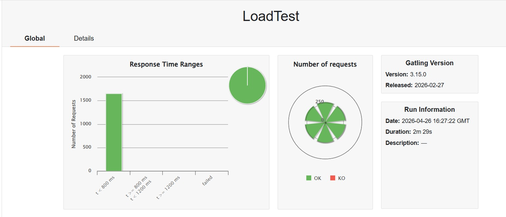
El Quality Gate exige:
-
Cobertura de tests ≥ 70% en el módulo
webapp -
0 issues de seguridad críticos o blockers
-
Duplicación de código < 3%
12.2. 12.2. Tests End-to-End (E2E)
Los tests end-to-end verifican que toda la aplicación funciona correctamente desde la perspectiva del usuario final, simulando escenarios reales de uso e interactuando con la interfaz tal como lo haría un usuario real.
En YoVi se ha configurado Cucumber + Playwright para los tests E2E, con los siguientes casos de prueba implementados:
-
Flujo de registro: Verifica que un nuevo usuario puede completar el formulario de registro correctamente, incluyendo validación de username (regex Unicode), nickname (máx. 15 chars), idioma y fecha de nacimiento. Comprueba también que el sistema gestiona errores comunes como username ya registrado o contraseña inválida.
-
Flujo de login: Comprueba que el sistema gestiona correctamente intentos de login con credenciales inválidas, mostrando los mensajes de error localizados en el idioma del usuario. Verifica que el JWT se almacena correctamente en
sessionStoragetras el login. -
Partida completa contra bot: Verifica que el usuario puede seleccionar dificultad (Easy/Medium/Hard) y tamaño de tablero, realizar movimientos, que el bot responde correctamente y que el temporizador funciona con los límites correctos (60s/30s/15s). Comprueba que al ganar o rendirse se muestra el modal de resultado y se registra la partida en el historial.
-
Cambio de idioma durante la partida: Verifica que al cambiar el idioma desde el selector, todos los textos de la interfaz se actualizan inmediatamente sin recargar la página y sin perder el estado de la partida en curso.
-
Gestión de amigos: Comprueba el flujo completo de solicitudes de amistad: búsqueda por FriendCode, envío de solicitud, aceptación y aparición en la lista de amigos de ambos usuarios.
-
Modo invitado: Verifica que un usuario no registrado puede jugar partidas completas como invitado, y que al intentar acceder a historial, perfil o amigos se muestra el modal de acceso restringido.
12.3. 12.3. Tests de Carga
Los tests de carga miden el rendimiento del sistema ante carga normal y picos de carga, permitiendo anticipar problemas de rendimiento antes de que afecten a usuarios reales.
Para la realización de estas pruebas se ha utilizado Gatling (Java + Maven), siguiendo las directrices del Laboratorio 9 de la asignatura.
12.3.1. Escenario de prueba
El escenario simula el flujo completo de un usuario jugando una partida:
-
Login — autenticación y obtención de JWT
-
Reset de partida — inicialización del tablero (tamaño 6, dificultad Easy)
-
Movimiento 1 — el jugador coloca una ficha (cellIndex: 3)
-
Movimiento 2 — el jugador coloca una segunda ficha (cellIndex: 8)
-
Rendición — el jugador se rinde y se persiste la derrota en MongoDB
-
Consulta de historial — el usuario consulta sus partidas anteriores
12.3.2. Configuración de carga
| Escenario | Configuración | Descripción |
|---|---|---|
Carga sostenida |
|
Subida progresiva a 10 usuarios en 30 segundos, manteniendo 2 usuarios/segundo durante 1 minuto. |
Pico de carga |
|
Pausa de 10 segundos seguida de rampa rápida a 25 usuarios en 15 segundos. |
Los thresholds de aceptación definidos son:
-
p95 de tiempo de respuesta < 500ms
-
Porcentaje de peticiones exitosas > 95%
12.3.3. Resultados
| Métrica | Carga sostenida (10 VUs) | Pico de carga (25 VUs) |
|---|---|---|
Peticiones totales |
780 |
1.650 |
Peticiones OK |
780 (100%) |
1.650 (100%) |
Error rate |
0% |
0% |
Latencia mínima |
2ms |
2ms |
Latencia media |
43ms |
41ms |
Percentil 50 (p50) |
37ms |
37ms |
Percentil 75 (p75) |
75ms |
76ms |
Percentil 95 (p95) |
116ms ✓ |
109ms ✓ |
Percentil 99 (p99) |
136ms |
124ms |
Latencia máxima |
441ms |
157ms |
Throughput medio |
8.21 req/s |
11 req/s |
Duración total |
94s |
149s |
12.3.4. Conclusiones de las pruebas de carga
El sistema YoVi supera en ambos escenarios los thresholds de calidad definidos. Con 25 usuarios concurrentes ejecutando flujos completos de partida, el p95 de latencia es de 109ms, muy por debajo del límite de 500ms. Destacablemente, el sistema escala bien bajo pico de carga: el p95 mejora de 116ms a 109ms al pasar de 10 a 25 usuarios, y el throughput aumenta de 8.21 a 11 req/s. El error rate se mantiene en 0% en ambos escenarios.
Esto valida el escenario de calidad SC-09 (acceso concurrente de múltiples usuarios) definido en la sección 10, donde se exigía un error rate < 1% y latencia media < 500ms.

13. Grafana y Prometheus
Para la monitorización del lado servidor se han utilizado Prometheus y Grafana de forma centralizada. Prometheus actúa como recolector y almacén de métricas de los dos microservicios principales: el módulo de usuarios (users-service en Node.js) y el motor de juego (gamey-service en Rust). Grafana consume esos datos y los visualiza en dashboards interactivos.
13.1. Dashboard: Monitorización Global de Microservicios YoVi
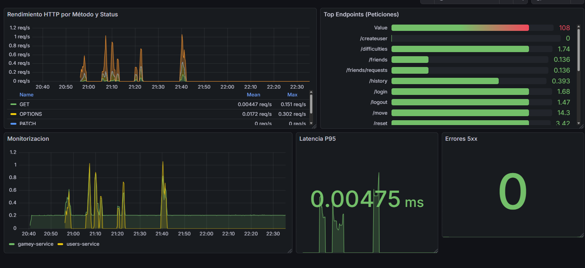
Este dashboard recoge las métricas más relevantes de la arquitectura distribuida. A continuación explicamos cada uno de los paneles detalladamente:
13.1.1. Rendimiento HTTP por Método y Status
Muestra la tasa de peticiones por segundo (req/s) de cada método HTTP junto con su código de respuesta a lo largo del tiempo. Esto permite identificar de un vistazo qué tipo de operaciones generan más tráfico y detectar anomalías en el comportamiento del servicio mediante un gráfico de áreas apiladas (Stacked Area).
En la muestra obtenida vemos una clara preponderancia de métodos POST-201 (creación de recursos) y OPTIONS-204 (negociación de CORS), lo cual es el comportamiento esperado en una arquitectura donde el frontend React se comunica con APIs protegidas por protocolos de seguridad.
13.1.2. Top Endpoints (Peticiones)
Este panel utiliza una visualización de tipo Bar Gauge para desglosar el volumen de tráfico por cada ruta específica del sistema. Permite validar qué funcionalidades son las más demandadas por los usuarios reales.
Se observa que el endpoint /move es el más visitado, confirmando que la lógica de juego gestionada por el microservicio en Rust es el núcleo de actividad. También se monitorizan correctamente rutas como /login, /history o /friends, permitiendo una trazabilidad completa de la carga entre ambos servicios.
13.1.3. Errores 5xx
Este panel muestra el número de errores de servidor (códigos HTTP 5xx). Su objetivo es detectar fallos críticos o pánicos en el sistema de forma inmediata.
El panel muestra un 0 constante, indicando que los servidores han sido capaces de manejar la carga sin problemas. Está configurado con umbrales visuales para alertar visualmente si se detectase cualquier excepción no controlada en Node o Rust.
13.1.4. Latencia P95
El percentil 95 de latencia nos indica el tiempo de respuesta máximo por debajo del cual se encuentran el 95% de las peticiones. Es la métrica más fiel para medir la fluidez de la experiencia del usuario.
El valor registrado durante las pruebas es de 0.00475 ms. Este resultado es excepcionalmente bajo y demuestra la eficiencia técnica de haber implementado el motor de juego en Rust (Axum), permitiendo procesar movimientos de juego de forma casi instantánea.
13.1.5. Monitorización de Servicios
Este panel de líneas permite comparar en tiempo real el tráfico que recibe el gamey-service frente al users-service.
Sirve para verificar que la arquitectura de microservicios está equilibrada y que ambos contenedores están reportando métricas correctamente bajo el entorno seguro HTTPS configurado.
13.2. 12.3.2. Conclusiones
Los datos obtenidos muestran un ecosistema estable, sin errores de servidor y con tiempos de respuesta extremadamente competitivos. La bajísima latencia del servicio de Rust justifica su elección para tareas de computación intensiva, mientras que la monitorización centralizada valida la robustez de la arquitectura global de YoVi.
14. Glosario
| Término | Definición |
|---|---|
Axum |
Framework web asíncrono para Rust, basado en Tokio y Tower. Se usa en GameY para exponer la API REST del motor de juego. Permite definir rutas de forma declarativa y compartir estado entre handlers mediante el patrón |
BFF (Backend For Frontend) |
Patrón arquitectónico en el que un servicio de backend actúa como intermediario dedicado para un frontend específico. En YoVi, el Users Service actúa como BFF: la Webapp solo conoce su API, y el Users Service se encarga de coordinar las llamadas a GameY internamente. |
bcryptjs |
Librería de Node.js para hash de contraseñas usando el algoritmo bcrypt. Usada en el Users Service con |
Coordenadas baricentricas |
Sistema de coordenadas |
DashMap |
Implementación de |
Database-per-Service |
Patrón de microservicios en el que cada servicio es propietario de su propia base de datos o esquema y los demás servicios no pueden acceder directamente a ella. En YoVi: el Users Service gestiona |
Docker Compose |
Herramienta de orquestación de contenedores para entornos de desarrollo y despliegue simple. YoVi usa Docker Compose para levantar los seis servicios (webapp, users, gamey, mongo, prometheus, grafana) con un único |
express-prom-bundle |
Middleware de Express que inyecta automáticamente métricas HTTP (latencia, método, código de estado, ruta) en formato Prometheus. Usado en el Users Service. Las métricas quedan disponibles en el endpoint |
FriendCode |
Identificador único de 6 caracteres generado con |
GameY |
Motor de juego del Juego Y implementado en Rust. Nombre del servicio y también del binario ejecutable. En modo |
GameStatus |
Enum de Rust con dos variantes: |
Grafana |
Plataforma de visualización de métricas y logs. En YoVi consume las métricas de Prometheus y las muestra en dashboards de disponibilidad y latencia del Users Service. Se provisiona automáticamente desde ficheros YAML en |
JWT (JSON Web Token) |
Estándar para transmitir información entre partes de forma compacta y verificable mediante firma digital. En YoVi, el Users Service firma un token con |
Lottie |
Formato de animación vectorial basado en JSON, exportado desde Adobe After Effects. En la Webapp se usa |
MPA (Multi-Page Application) |
Arquitectura web donde cada "página" es un documento HTML independiente con su propio bundle JavaScript. YoVi tiene 4 páginas: |
Mongoose |
ODM (Object Document Mapper) para MongoDB en Node.js. Proporciona definición de esquemas con tipos, validaciones y métodos de consulta. Usado en el Users Service para los modelos |
mongoose.model(…)` evita redefinir modelos en los tests. |
|
nanoid |
Librería de generación de IDs únicos para JavaScript. Usada en el Users Service con |
Nginx |
Servidor web y proxy inverso. En YoVi actúa como punto de entrada para la Webapp: sirve los ficheros estáticos construidos por Vite, redirige HTTP a HTTPS y gestiona el SSL con certificados generados por mkcert. |
PayPal SDK ( |
SDK oficial de PayPal para React. Usado en el componente |
PlayerId |
Struct de Rust que encapsula el ID numérico de un jugador (0 = humano/azul, 1 = bot/rojo). Usado en |
Prometheus |
Sistema de monitorización y alerta open-source. Recoge métricas en formato de series temporales mediante scraping HTTP periódico. En YoVi hace scraping al Users Service cada 5 segundos. Las métricas se configuran en |
ProBot / AttackerBot |
Los dos bots de dificultad Hard en GameY. Ambos calculan la distancia BFS de cada celda vacía a los tres lados del tablero. |
React Testing Library |
Librería de testing para componentes React que fomenta tests centrados en el comportamiento observable desde el usuario (lo que ve en pantalla) en lugar de los detalles de implementación. Usada con Vitest en la Webapp. |
Rustls |
Implementación de TLS en Rust puro (sin dependencias de OpenSSL). Usada en GameY mediante |
sessionStorage |
API de almacenamiento del navegador cuyo contenido se elimina al cerrar el tab. En YoVi se usa para guardar el JWT y el username de la sesión activa. Contrasta con |
SonarCloud |
Plataforma de análisis estático de código en la nube. En YoVi analiza la cobertura de tests, bugs, code smells y hotspots de seguridad en cada push al repositorio. La configuración se define en |
Supertest |
Librería de Node.js para testing de APIs HTTP. En los tests del Users Service se usa con Vitest para hacer peticiones HTTP reales al servidor Express sin necesidad de levantar un puerto de red. Compatible con el objeto |
Tokio |
Runtime asíncrono para Rust. Proporciona el executor de |
totalScore |
Campo numérico en el modelo |
Union-Find (Disjoint Set Union) |
Estructura de datos para gestionar conjuntos disjuntos con operaciones |
UserSession |
Struct de Rust en GameY que agrupa el estado privado de cada jugador: |
Vite |
Herramienta de construcción y servidor de desarrollo para aplicaciones web modernas. En YoVi se usa con el plugin |
Vitest |
Framework de testing unitario compatible con Vite. Usado tanto en la Webapp (con |
XP (Experience Points) |
Sistema de puntuación de YoVi. Se obtiene ganando partidas (cantidad calculada en función de la dificultad y el tamaño del tablero: 100 × multiplicador × size/6) o comprando paquetes en la tienda PayPal (1000 XP por 1€). Se acumula en |
YEN (Y Exchange Notation) |
Formato JSON para serializar el estado del tablero del Juego Y. Inspirado en la notación FEN del ajedrez. Campos: |
YBot |
Trait de Rust que define la interfaz que deben implementar todos los bots del juego. Métodos obligatorios: |
YBotRegistry |
Estructura de Rust que gestiona los bots disponibles mediante un |
YGN (Y Game Notation) |
Notación alternativa para representar la secuencia de movimientos de una partida del Juego Y (análoga al PGN del ajedrez). Definida en el módulo |
Juego Y (Game of Y) |
Juego de conexión para dos jugadores inventado por Claude Shannon y John Nash en los años 50. Se juega en un tablero triangular: el jugador azul (humano) y el rojo (bot) se turnan colocando fichas. Gana el primero que conecte los tres lados del triángulo con una cadena continua de sus piezas. A diferencia del Hex, donde hay dos lados por jugador, en el Juego Y todos los jugadores compiten por conectar los mismos tres lados, lo que hace imposible el empate. |
mkcert |
Herramienta para generar certificados SSL de desarrollo firmados por una CA local de confianza. En YoVi se usa para generar |
14.1. Terminos adicionales del estado actual
| Termino | Definicion |
|---|---|
GameProvider |
Abstraccion de la webapp para ejecutar una partida sin acoplar la pantalla al modo concreto. |
Socket.IO Gateway |
Capa de tiempo real implementada en |
PvpSession |
Sesion de partida multijugador en GameY. Se guarda en |
match_id |
Identificador interno de una partida PvP. Lo genera |
ALLOWED_ORIGINS / ALLOWED_SOCKET_ORIGINS |
Variables de entorno que limitan los origenes aceptados por CORS HTTP y por Socket.IO. Por defecto permiten localhost HTTP/HTTPS y Vite en el puerto 5173. |